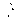

kutuphaneci - eskikitaplarim.com
David For�est
... 8işko'dan
' Pol@rde
kazandığım
c5ldayı da
GYeğeI/ime
bırakıyorum
Çeviren:
OGUZ ALPLAÇİN
HüRRiYET
YAYINLARI
ÇAGDAŞ YAZARLAR: 1
ŞIŞKO'DAN POKERDE KAZANDIGIM
ADAYI DA YEGENiME BIRAKIYORUM
Yayın hakkı (Copyright) :
David Eliades, Robert
Forrest Webb ve Hürriyet
Yayınlan
Birinci baskı
1:
Eylül, 1972
Tiraj
10.000
Kapak düzeni
Firuz Aşkın
Dizgi-baskı
Garanti Matbaası
Cildiye
Hamit Kırma ve Cilt Atölyesi
ŞİŞKO'DAN POKERDE
KAZANDIGIM ADAYI DA
YEGENİME BIRAKIYORUM
ÇAGDAŞ YAZARLAR DİZİSİ
1) ŞIŞKO'DAN POKERDE KAZANDIGIM
ADAYI DA YEGENiME BIRAKIVORUM
Yazan
DAV!D FORREST
Çeviren
: OöUZ ALPLAÇiN
Hazırlananlar :
2)
DALGALARIN SESi
Yazan
: YUKIO MiŞiMA
Çeviren
:
ZEYYAT SELiMOGLU
3)
AKINTI ADALAR!
Yazan
ERNEST HEMiNGWAY
Çeviren
: KOSTA DAPONTE
4)
DEMiR HAÇ
Yazan
: WILLI HEINR!CH
Çeviren
:
TEZER KIRAL
Scilly Adalarındaki Piskopos Kayası fenerinden güne·
ye doğru bir çizgi çekin. Bir çizgi de, St. Mary'deki Pen·
ninis Burnu'nun çeyrek mil batısından güneye doğru
çizin. iki çizginin kesiştiği yerin on yedi mil güneyinde
ve Fransa'nm en batı noktasının seksen beş mil açığın·
da bir tekne yol alıyordu ...
7


1
- «Sizin buralarda balinalar var mı ?»
Motorcu : «Pek görülmez,» diye karşılık verdi.
Albert : «Eh, burnumuzun dikine ilerde ben bir
tane görebildim galiba,» dedi.
Dürbünüyle, ufuk çizgisindeki dalgaların üzerinde şekillenen kara lekeye baktı.
- «İşte şur'da, bir bakın.»
Motorcu göğsünün ağırlığını destek 'yapıp, dümeni sağa sola oynamaksızın tutabileceği bir durum aldı. Gözlerini Albert'in dürbününe uydurdu.
- «Hangi balinadan bahsediyorsun, canım ci-
ğerim ? O gördüğün şu senin kaya yığını. . . »
Albert dürbünü kaparcasına g.eri aldı : «Peki
ama, ağaçlar nerede ?»
- «Ne ağacı, aslanım ? Çayır çimenden geçtim,
burada insanın sakalı bile uzamaz.»
Kayalık giderek daha belirli, çizgileri daha keskin, daha çirkin bir görüntü halini aldı.
Albert : «Bütün Scilly Adalarında ağaçlar, çi
çekler bulunur sanıyordum,» diye diretti.
Kanunen kendisine ait adanın böylesine çıplak
olduğunu bir türlü kabullenmek istemiyordu.
Motorcu : «Bir zamanlar belki varclı. » dedi.
«Şoyle hafiften bir esinti hepsini silip süpürdü herhalde.»
- «Bozkaya'nın burası olduğundan emin misiniz? Bir yanlışlık yapmış olmayasınız? .. »
Motorcu gülümsedi.
9
- «Nicedir buraya gelip giderim, oğul. Çevrede bir tek Bozkaya var, o da burası işte.»
Ustaca bir manevrayla, tekneyi adanın en batısına dUşen küçük bir koya soktu. Adanın kelliği yakından daha belirliydi. Sadece deniz suyunun tuzuyla ağarmış, çiğ, pırıltılı bir aklık almış hayaların yüze
yakın yerlerinde yosunların gevşek gevşek sarkışı
gerçekten ilginçti.
- «Kıyıya iyice sokulamam. Onun için atlayıp
çıkman gerekiyor. Yüzü temiZ bir kayaya atlamağa
bak, yoksa cumburlop suyu bo'ylarsın. Seni almak
için bugün öğleden sonra saat dörtte geleceğim .»
Motorcu ansızın aklına gelmiş gibi, yapmacıksız bir
içtenlikle, «haa, sakın yüzmeğe falan kalkı�ma. Öyle her aklına eseni yapma,» dedi. «Doğru dürüst pam ödeyen bir müşteriyi kaybetmek hiç hoşuma gitmez.»
Albert kıyaya atlarken : «Gene görüşürüz,» diye bağırdı. «Beni burada unutmayacağını umarım. »
Sıc;ık bir Haziran günü'ydü, Tekne kıçın kıçın
açılırken, deniz suyunun bitimindeki çakılları yumu
şak çırpıntılarla yıkıyordu.
Krallığının sınırından içerilere doğru ilk ad•mlarını atarken, Albert «ŞU düzmece turistik seyahat broşürleri sırf palavra» diye düşündü. «Scilly Adalarına gelin. Palmiye ağaçları, uçsuz bucaksız kumsallar, çiçekler. Şatolar ve yeşilliklerle çevrili malikaneler. . . Eşi benzeri bulunmaz bitkilerle dolu bah
çeler. Yüzme havuzları, dupduru yüzü kesme kristalden farksız göller .. Oysa gelip de ne buluyorum? ..
Tanrının elini çektiği bir kel kayalık. Şö'yle insanın
gözünü okşayan yaban çiçekleri bile hak getire .. »
Kendisini ansızın adanın ortasına varmış bulunca, elinde olmaksızın şaşırdı. Topu topu yetmiş beş
adım atmıştı. Çevresine bakındı. Adanın en yüksek
noktasında, yüzü şuncacık bir çıkıntıyla pürüz!enmiş
dümdüz bir açıklıkta. duruyordu. Burası denizin en
10
kabardığı zaman ulaştığı düzeyi işaretleyen noktadan altı metre yükseklikteydi. Bulunduğu yerden her yönde denize taş atabilirdi. Sağda ve solda kıyı çizgisine varması için otuz yedibuçuk adım atması yeterliydi. 1leriye doğru atacağı yetmiş beş adımla da adanın öteki yarısını aşmış olacaktı.
Alçak sesle: «Cehennemin bir bucağı,» diye söylendi. «Görünürde sıcaktan gevşemiş, güne<;>in altında dalgasını geçen bir Tanrı kulu bile yok.»
Ansızın, hafif çırpıntılı denizde, birkaç metre
açıkta küçük bir kayanın üzerindeki bir hareket dikkatini çekti.
- «Krallığımın sadık halkı. .. »
Dikkatle onları inceledi. Onlar da bu ilgisini kendisine bakmakla cevaplandırdılar. Albatros türiinden kocaman iki deniz kuşu, kıpırtısız ve tetikte akbabalar gibi onu gözlüyorlardı. Küçük balıkları gagalamakla yolunu bulan, benekli, hafiften aksar gibi sıçrayan bir martı didikledi.ği ycsundan ba<şını kaldırdı, ürktüğünü açığa vuran tiz, yırtık bir çığlık atarak ona baktı.
Albert gösterişli, ancak soylu kişilerin kıvırabileceği bir eğilişle onları selamladı.
- «Saygıdeğer Lord'um, soylu bayanlar
ve
baylar, kralınız tacından tahtından vaz;eç;y0r. »
Çevreye şöyle bir bakmak yetmişti. St Mary'e
dönmek için kararını vermişti bile, fakat kıya arm
arasmdaki çatlakları andıran dar, keskin 'yü.,.lü ratikadan tekrar kıyıya indiğinde, motorcunun sesinin ulaşamayacağı kadar açılmış olduğunu gördü. Ufukta giderek belirsizleşen bir nokta halindeki tekneyi ancak seçebildi.
Albert hiç hesapsız, işi oluruna bırakarak yaptığı anlaşma yüzünden bir kiifür savurdu. Şimdi ak
şamüstüne kadar bu çıplak kaya yığınına bağlanıp
kalmıştı.
- «B . . . » diye söylendi.
11

Ciğerlerini havayla doldurdu ve aynı kelimeyi
olanca gücüyle bağırdı:
- «B ... »
İki deniz kuşu korkuyla havalandılar. Birbirlerine çarptı, dengelerini kaybedip, ağır, şekilsiz bir kitle halinde suya düştüler. Benekli martı omuzunun üzerinden ona bakarken, yönünü, yörüngesini şaşırmış bir sarhoş gibi yalpalayan, aksayan iki sıçrama yaptı. Kendini çıplak bir kayanın üzerine atıp orada hareketsiz kaldı.
Albert: «Topunuzu azad ediyorum,» diye buyurdu. «Birinci Albert gönlünün 'yüceliğini gösteriyor.»
Ellerini keten pantolonunun arka ceplerine sokuşturan Kral, sağ ayağının burnuyla vurduğu büyükçe bir çakılı denize savurdu. Ağır, acelesiz adımlarla ülkesinin geri kalan kısmını dolaşmağa koyuldu. Bir yandan da «Yararsız, taşla dolu bir heybe»
diye düşünüyordu.
Bir koyda bağlı, durgun suda belli belirsiz kıpırdayan sürat teknesinin narin, mavi gövdesini o esnada gördü. Teknenin bağlı olduğu yere yöneldi.
Albert:
- «Heeey», diye seslendi. «İznim, rızam olmaksızın adama sokulmak cüretini gösterenler var galiba? Bunun hesabını sormaz mıyım ben... Korsanlar ... Neyseki zamanında gelmişim. Muhafızlar ...
DAV-RA-NIN.»
·Uzun boylu, güneş yanığı esmer bir kız yirmi
metre kadar ilerde, yüzü dalgalarla 'yıpranıp düzlenmiş bir kayanın üzerinde boylu boyunca yatıyordu. Teni öylesine esmerleşmişti ki, enli kordelalar halinde denize sarkan yosunların yanısıra güçlükle
seçilebiliyordu. Güneş ışınlarının denizin
yüzünde
ayna gibi yansıdığı yerde yağlı vücudu ışıl ışıldı.
Alabildiğine narindi. Beli incecik, l<alç�larının
çıkıntısı belli belirsizdi. Sarı saçını at kuyruğu hiçi-
12
minde bağlamıştı. Çıplaktı, hem de kimsenin daha
ötesini hayal edemeyeceği kadar çıplak ...
Ellerini başının altında yastık yapmış, sırtüstü
yatıyordu. Erginliğin eşiğine henüz varmış kızlarınkini andıran memeleri, diri yumrular haıınde ve vücudunun geri kalan kısmı kadar tatlı, gözalıcı bir esmerlikteydi.
Albert uzun uzun baktı. Kız yalnızdı. Böyle şeylerin ustası, işini bilen biri sıfatıyla, kızın gerçek bir lokma olduğunu kestirdi. Onu kolleksiyonuna
katmak için aklından hemen bir dosya açtı.
«Olsa olsa onyedi yaşında. Tekneye bakılırsa
varlıklı. Büyük ihtimalle bir kolej öğrencisi. Teninin
güneş yanığı esmerliğinden, bu çevrede ya9a:yan, ge
çim derdinden uzak, çalışmayan bir kız olduğu anlaşılıyor. Boyu l.70'e yakın. Ağırlığı yaklaşık olarak 56 .. Anadan doğma s arışın . .. Gözleri ya m avi, ya da
gri m avi. .. Yeni yeni sigaraya başlamış. Zevk sahibi. İnce, seçkin şeylerden hoşlandığı belli. Hafiften içkiye de başlamış olabilir.
Erkek arkadaşları ? .. Güneşte boylesine yanaı
ğına göre, vaktinin çoğunu bu işe harcıyor. üstelik
çevredeki gençlerin kolayına sokulamayacakları, ancak uzaktan bakarak yutkunmakla yetinecekleri bir parça. Henüz mevsim başı, bu yıl tatile gelmiş olanlarla ahbaplık kuracak zamanı bulamamıştır. Diyelim okulu geçen Eyıül bıraktı, bu arada kimselerle pek alış verişi de olmamıştır. Cinsel deneylerinin, bu
konudaki görmüş geçirmişliğinin sınırlı olduğu muhakkak.»
Albert aklında açmış olduğu dosyadaki değerlendirme ve tahminlerden, «buranın kralı benim, cna sahip olabilirim. İznim olmaksızın adama ayak bastı. Onu savaş tutsağı alsam ne Hızım gelir?» sonucuna vardı.
Bu fikrini çok beğenip keyiflendiğinden, a'ynı
doğrultuda düşünmeğe devam etti. Topraklarının sı-
13

nırını aşan bir kimse, savaş ilan edilmemiş de ol
ı:a bir savaş tutsağı sayılabilir miydi? Yoksı kız
kanuni yollara başvurmaksızın onun topraklarma sı
ğınan biri miydi? Bir sürgün müyd.ü? Buna ka. şılık, Albert'in ülkesinde yerleşmek isteyen bir göçmen de olabilirdi. Albert sonunda kızın bir turist duğuna karar verdi. Ne de olsa, onunki gibi küç k
ülkelerin ekonomik durumlarını güçlend�rmek iç.in
turiste ihtiyacı vardı.
Kendisini apoletleri sırmalı, pirinç düğmeleri
ışıl ışıl, göz alıcı kırmızı bir üniforma içinde, başında siperliği geniş, önü yüksekçe kepiyle g.örür gibi oldu. Başında böylesine bir kep varken, alabildiğine
resmi bir tavır takınıp kızdan pasaportunu istemesi işten değildi.
- «Pasaport lütfen? Pasaportunuz yok nıu ? ..
Özür dilerim, kurallara harfi harfine uymak zorundayım.»
Kızı birkaç gün sırf ekmek suyla yaşamağa terkedebilirdi. Sonra onu özel apartmanına götürecek, ı:myuna parfüm katılmış pembe küvetlerde banyosunu yapmağa bırakacak, ipekli giysi1er giydirzc2kti.
Birlikte akşam yemeğine çıkacaklardı. Bazı filimlerin şaşmaz düzeni olan bu teknik son derece etkileyiciydi. Kız eninde sonunda, çoşku1u bir minnet duygusuyla kendisini onun yatağına atacaktı.
Şöyle bir diklendi ve kıza doğru yürüdü. Ona
yaklaştığında, kız telaşsız, yumuşak bir ha:."ekef e
kocaman bir plaj havlusuna uzandı. Havluyu alıp
gevşekçe sarındı.
Onun varlığından haberli olduğunu belirten başka bir hareket yapmadı. Gözleri knpalı görünüyordu. Albert boynunda asılı olan dürbünü göği'üne kadar kaldırdı. Bir an, kızı daha yoğun bir dikkat1e, daha yakından incelemek için dürbünden bakmayı
düşünmüştü. Sonra belki de kızın gözleri açıktır,
14

böyle bir şey can sıkıcı olabilir diye caydı. Alt tarafı
kızdan sadece birkaç karış mesafedeydi.
Gölgesi onun üzerine düştü. Kız bir gözünü açtı. Işıltılı bir mavi kıvılcımlandı. Sonra ikinci göz açıldı. Albert onun da aynı renk olduğunu görerek
büyük bir iç rahatlığı duydu.
- «Güneşle aramda duruyorsun.»
Albert biraz daha sokulup onun yanına otur-
du.
- «Sen de benim adamda yatıyorsun,» dedi.
Kız ona baktı.
- «Ben giyinirken gidip de başını biraz suya
soksana. Giyinmem topu topu on dakika sürer.»
Albert öteye doğru, kayanın bulunduğu yere
yaklaşan ve keskin sırt çizg.ilerinde güneş ışınları
hıvıicımlanan artlarda üç küçük dalgaya baktı. Arkasında kızın giysilerinin yumuşak hışırtısını duyuyordu.
Kız: «Birkaç dakika önce kendi kendine bağırdığını duydum,» dedi. «Bağırarak söylediğin şey soylu ailenizin savaş nağrası mıydı? .. Şimdi bakabilirsin.»
Albert başını çevirdi. Kızın ne diye zahmet edip
böyle bir bikini giydiğini kestirememişti doğrusu.
Varla yok arası bir şeydi bu. Varlığını belli eden
sadece el kadar bir sarılıktı.
Kızın saçı güneşle akçıllaşmış yerlerde tel. tel
ışıldıyordu. Kaşları hemen hemen beyazdı. Yüzünün ana çizgileri ilk bakışta göze çarpan Nordik ırkın özelliklerini taşıyordu. Genç kız tüın görünüşüyle, ona oturduğu çevredeki metro istasyonunun ilan panolarında sık sık gözüne ilişen bebek yüzlü prensesleri hatırlattı. Albert sırf bu aşinalıktan cesaret alarak, kıza sütyeninin gerçekten çamaşır makinesinde doksan altı kez yıkanabilecek kadar dayanıklı olup olmadığını sormağa karar verdi. Şimdi bunu
15

düşünürken, o resimli ilanların metnini de okumuş
olmasına şaşıyordu.
Gözlerinin rengini tapminde yanılgıya düşmemiş
olmasına sevindi. Kızın aksanı başka tahminlerini de
doğrulamamıştı. Sonra onun yüzük takınmadığını
farkederek içi büsbütün r ahatladı.
Albert aklından kızı koynuna almıştı bile.
Genç kızın yumuşak sesiyle tekrar gerçeklerin
cünyasına döndü.
- «Seni daha önce hiç görmemiştim. Oys a yüzyıllardır burada güneş banyosu yapıyorum.»
Albert cebinden yıpranmış bir sigara paketi çıkardı. Kıza da bir sigara tuttu.
-«İlk gelişim,» dedi. «Adaya miras yoluyla
henüz sahip oldum. Bu yüzden buranın kralı oldu
ğumu düşünüyorum.»
- «Eh, bana göre hava hoş, Majeste. Ülkeni
Z8 hoş geldiniz. Güneş banyosundan başka bir şey
için işe yaracayağını sanmıyorum.»
- «Tipik sömürgeci tutumu. Hırsla bir yere
sahip olmak ister, bunun için ne gerekiyorsa yaparsınız. Sonra da oranın hiç bir değeri yokmuş gibi davranır, önemsememezlik ten gelirsiniz.»
Kız: «Zengin olduğuna bahse girerim,» dedi.
«Bankadaki hesabıyla sağ kanad takınmış bir sosyalist..»
- «Yanılıyorsun. Bütün malım mülküm bu ada.
Bir sinemada çalışıyorum. Sen ne yaparsın?»
Kız: «Hiç,» diye karşılık vereli. «Babam St.
Mary'de bir hukuk danışmanı. Onun yanındayım.
Çok sıcak günlerde buraya gelirim. Motorunu nereye bağladın ? Adanın batı tarafında demirlemek pek emin değildir.»
Albert: «Yüzerek geldim,.» dedi. «Ünlü bir uzun
mesafe yüzücüsüyüm. Gidiş geliş s adece otuz dört
mil.»
16


- «Çılgınsın sen .. »
Albert onun sigarasını yaktı ve birkaç saat için
adaya bağlanıp kalmış olduğunu itiraf etti.
Kız: «Birkaç
sandöviç
getirmiştim,»
dedi.
«Acıktım. Onları teknemden alıp getirirsen seninle
bölüşUrüm. Plastik bir kutunun içinde ... Sahi, aklıma gelmişken sorayım, adın ne senin?»
- «Ben Arberfim. Al bert Quinlan. »
Kız kıkır kıkır güldü.
- «Bunda gülecek ne var?»
Kız: «Doğru,» dedi. «Gerçekten bir şey yok.
Yalnız benim adım da Victoria'dır. Onun için güldüm.»
Yerinden kalkan Albert sürat teknesinin durdu
ğu yönde yürüdü. Victoria onun uzun boyuyla dimdik yürüyüşünü gözledi. Tekneye varınca eğilen
Albert ahşap bölmelerin altında kutuyu arandı. Sonra doğruldu ve başının yumuşak, kendiliğinden bir hareketiyle kahverengi saçından alnına düşen per
çemi geriye attı.
Genç kız «fena değil» diye düşündü. «Aşağı yukarı yirmi dört yaşında. Hareketleri düzgün. Kalçaları seksi bir tip olduğunu belirtiyor. L-0ndra ağzıyla konuşuyor. Hızlı olduğu belli. Yapısı kusursuz.
Bakışları kararlı. Mükemmel.,»
Albert geri dönmüştü.
- «Tekne çok güzel,» dedi. «Senin mi?»
- «Babamın.»
Sandöviçlerini hiç konuşmaksızın yediler.
Albert motorcuyu kaçırdığından memnundu ar-
tık. Gömleğini soyunup kızın yanına uzandı. Güneş
yakıp kavuruyordu. Küçük dalgaların yumuşak öpüşlerle kavuştukları kayanın kenarlarından buhar yükseliyordu.
- «Adayı kimden miras aldın?»
- «Yaşlı amcam Alf'dan. Beni o büyüttü. Bir
poker partisinde kazanmış. Ben küçükken, beni de
17
f/2

pokerde kazandığını söyleyip dururdu. Annem zatürrie olup öldü. Alf amca babam savaştan dönünceye kadar bana bakmayı yükümlendi ama, bizim peder savaştan dönmedi.»
Albert, Alf amcanın zorlu içkici bir demiryolu
işçisi olduğunu, İngiltere'ye I.R.A.'nın ( *) uğraşına
yardım amacıyla, bu mücadeleye katkıda bulunmak
için geldiğini anlattı. Giderek İngiliz birasını öylesine sevmiş, o kadar alışmıştı ki, gerçekte kendisini oraya getiren nedeni unutmuştu.
Yabanın tekiydi Alf Amca. Hemen her zaman
sarhoştu. Gel gelelim mangal gibi bir yüreği vardı.
Tekmil parasını yarın değeri düşürülecekmiş gibi,
har vurup harman savurmacasına harcardı, fakat
Albert'in iyi beslenmesini, eli yüzü düzgün bir evde
oturmasını sağlayacak kadarını daima bir kenara
ayırırdı. �
Çocuğa hem ana, hem baba, hem de kötü örnek
olmuştu. Al bert onu çok severtli. Alf Amca Londra' -
nm East End kesiminde O'F'laharty'nin barındaki bir
poker oyununda adayı kazandığından beri, son aylarını bir gün gelip buraya yerleşnıeyi, kumsal kıyıyı bir plaj gibi düzenlemeyi hayal ederek geçirmişti.
O . ölünce, Albert tek mirasçısı sıfatıyla adaya
ve birkaç yüz boş bira şişesine sahip olmuştu. Bu bira şişeleri el altındaki her dolapta ve evin dışında dikkatle istiflenmişti.
Sağlığında, Alf Amca Albert'e sık sık: «Düsün
bir kez, içinde para bulunan bir cüzdan çalınabilir
ama, tek tek sadece birkaç kuruş eden bira şişelerini
kim çalacak ?» derdi.
Albert küçük evi ter�emiz etmiş, şişe kolleksiyon:unu y�kl�şık olarak 10 Ingiliz lirası karşılığında gen vermıştı. Amcasının gereği gibi bir cenaze töreniyle ( * ) !r'Janda'nın tam bağımsızlığını amaç edinmiş, daha çok
Katolik İrlandalıların üye olduğu bir örgüt. - Ç.N.
ıs

loprağa verilmesini görev bilmişti. Alf amcanın ölümlü bedeni toprağın sinesine bırakıldıktan sonra, Şişko Hagan, Alf'ın Roma Katolik mezhebinden olmasının yararını açıklamıştı. Yoksa cesedini _'yakmağa kalkı�;acaklar ve alkolle dolu gövdesi bir roket gfüi
patlayarak havalanacaktı.
Albert yaz tatillerini Adasında geçirmek ıçın
nelere katlanmıştı. Oysa şimdi buraya gelmiş ve ..
Victoria: «BU adayla pek bir şeyler yapabileceğini sanmıyorum,» diye fikrini açıkladı. «Doğrusunu istersen biraz tenha.. Kışı burada geçirmek hiç işime gelmez.»
- «Özellikle bu çevrede yaşayabilen kuşların
sığınacağı bir kuş cenneti yapabilirim,» diye karşılık veren Albert, sözlerinin tepkisini izler gibilerden Victoria'ya baktı:
- «Kuşları sever misin?»
Albert yapmacıksız, göstermelik olmaktan uzak
bir içtenlikle:
- «Her zaman onları seyrederim,» dedi Ordu
malı dürbününü gösterip, «bununla kendilerine dah:ı
çok yaklaşabiliyorum,» diye ekledi. «Hareketlerinin,
yaşantılarının tüm ayrıntılarını inceliyorum.»
- «Gördüğün her kuşun ismini bilir misin?»
- «Ünlar.a hoşuma giden, gönlümün dilediği ad-
ları veririm.
- «Peki öyleyse, şunlar ne kuşu?»
Kız Albatros türünden deniz kuslarmı
işaret
,
ediyordu.
- «Ne kuşu oldukları umurumda değil. Tombulun adı Leslie, çelimsizin de Desmond.»
Victoria güldü: «Bunlar Albatrcs diye tanımlanan deniz kuşunun bir başka türü. Peki, şu kim?»
Bu kez benekli, kayanın kenarında bir bacağının
üzerinde dengelenmeye çalışan martıyı gfütc:rmişti.
Albert: «Bir leylek,» dedi. «Adı da Cedric ... »
Victoria fıkırdadı.
19
- «Gerçekten çılgınsın sen. Onlarla ilgili hiç bir
şey bilmiyorsun.»
- «Öğreniyorum. Bu da bir başlangıç sayılır.»
Kayaların gölgesi onları kızgın güneşten pek az
koruyabiliyordu. Albert suyun yüzünde yansıyan güneş ışınlarının gözlerini almasından tedirgin olmuştu. Victoria'nın bulunduğu yerden biraz daha yüksekte, geniş ve keskin kenarlı bir çıkıntıya tırmandı.
Buradan kıza farkettirmeksizin onu gözleyebiliyor.
du. Böyle uzun uzun baktıkça kızı daha ilginç, daha
istek uyandırıcı bulmağa başlamıştı.
Victoria: «Yüzer misin?» diye sordu.
- «Neyle yüzeceğim? .. Pantolonumla mı?»
- «Kilotun ne güne duruyor?»
- «Biraz laübali olmaz mı?»
- «Bana göre hava hoş. Sıkılacağımı falan san-
ma.»
,
Albert göğsü çok içilen bira etiketlerinden biriyle desenlendirilmiş kolsuz fanilasını sıyırıp çıkardı. Slip biçimi kilotunda da aynı desen vardı.
Albert ve Victoria ışıltılı, dupduru suda bir süre yüzdüler. Sonra dönüp kurunmak için tekrar kayanın üzerine oturdular.
Albert: «Ne olursa olsun, burası Manny'nin
kasvetli Biograph'ına kıyasla daha göz, gönül açıcı
bir yer,» dedi.
- «Anlamadım?»
- «Çalıştığım berhaneden sözediyorum.
Orada
yönetici yardımcısıyım. Salondaki güveler kadar
müşteri gelse, patron tez zamanda milyoner olup çıkardı.»
Victoria: «Tatsız bir yere benziyor,» dedi.
- «Tatsızdan da öte.. Neyleyim ki oradan geçiniyorum. İnsanlar çok iyi. İçlerinden çoğu geçkin, yap'ayalnız yaşayan kimseler. İnanır mısın, o tonton
pimpiriklerden biri, geçen hafta bana bitişik koltu
ğa bıraktığı sandövicini bir farenin yediğinden ya-
20


kındı. Ben de faresini beraberinde getirmeseydi daha iyi edeceğini söyledim. Nasıl afalladığını görecektin. Kendisine bir hamburger ısmarladım. Bana biraz paraya mal oldu tabii. Üstelik bedavacı takımındandı.»
Genç kız gene fıkırdadı: «Patronun bu işe ne diyor?»
- «Manny mi? .. Manny esaslı adamdır.»
Albert bu kez patronunu anlattı. Manny yahudiydi. Mıhsıçtının teki değildi Manny. Albert bedavacılara sadece taks ( *) bilet kesip salona aldığı za,..
manlar hiç yakınmazdı. Kış aylarında, Albert özel
ve bedava takımından müşterilerinin kemikleri üşümesin diye kaloriferlerin veryansın yanmasına dikkat ederdi. Onlar da hiç aksatmaksızın, ker gün Biograph'a gelir, gün ortasından kapanma saatine kadar tekmil programı seyrederlerdi. Yiyeceklerini de beraberlerinde getirirlerdi. Gösterilen filimler çokluk eski ve kötüydü. Bu yüzden tam para ödeyip bilet alacak müşteriler için daima yer bulunurdu, fakat
bunların sayısı parmakla sayılacak kadar az olurdu.
Kırk yılda bir gerçekten iyi bir film gösterildiği olur, o zaman da bedavacılar bütün koltukları doldurup paralı müşterilere yer bırakmazlardı. Manny bütün bunlara rağmen huysuzlanmazdı, Para kazanamayışını dert edinmezdi. Bu işten para yapmadığı bir gerçekti ama, kendisi ve Albert zavallı yaşlılara
gözkulak olmasalar oniarla kim ilgilenecekti? ...
Manny: «Biraz düşün, Albert,» derdi. «'Şu senin adayı aklından çıkarmağa bak. Senin geleceğin burada, benim yanımda. Sinemacılıkta .. »
Sonrası ay ayaz, gün beyaz meydandaydı. Albert kelebek boyunbağını doğrultacak, elden düşme, koyu renk, yakası parlak saten ceketini şöyle bir
( *) Bizde de,
sinema ve tiyatrolarda
alınan eğlence
vergisi karşılığı. - Ç.N.
21

düzeltecek, kahramanını. Baba Douglas Fairbanks'ı
seyrederek sıraların arasında dolaşacaktı. Genç
Douglas Fairbanks'ın filimleri halen Manny'nin mali olanaklarının çok üstündeydi.
Victoria : «Yola düşmenin zamanı,» dedi.
Albert bayağı içlenmişti.
Motorla St Mary'e dönerlerken, adaya gitmek
için yola çıkmış olan Albert'in balıkçısını limanın
birkaç yüz metre dışında çevirdiler.
Buzza Değirmeninin yakınındaki küçük pansiyonda, Albert karyolasının üzerine oturdu ve günün olaylarını düşünmeğe koyuldu. Ada onmaz bir hayal
kınklığının kaynağıydı. Buna karşılık, Victoria'nın
varlığı ve tutumu son derece umut vericiydi. Ne
olursa olsun, tatilinin hale yola girmesi, şenlikli bir
hal alması umudu vardı. Belli olmaz, belki Bo::kaya'nm çevresinde kayalıklar arasında, esaslı b:r defineye yataklık eden batık bir gemi bile bulabilirdi.
Gittikçe renklenen hayallerinden sıyrılan Albert, Mrs. Pengelly'nin Kral Edward devri villalarının özentisi evinde bir güzel soyundu. Duş yapmağa niyetlenmişti ama, bu adamakıllı gür; bir i�ti. Mrs.
Pengelly nin pansiyonundaki duş tesisatı, büyükçe
'
bir ibrikle bir leğenden ibaretti.
Albert leğeni yere yaydığı bir havlunun üzerim· koydu. Sonra kılı kırk yarmacasına bir dikkatle leğene girdi ve ibrikteki soğuk suyun yarısını dökünerek sabunlandı. Soğuk suyun ikinci y:!msı, sabun köpüklerinin büyük bir kısmını alıp götürmeğe yetmişti. Geri kalanını da havlu temizledi.
Duş sorununu böylece geçiştiren Albert özenle
giyindi ve Balıkçının İni'nde çimlenecek olan Victoria ile buluşmak için Hung. Town yoluna düş'.:ü. Oraya vardığı zaman Victoria içerdeydi.
Duruma şöyle bir göz.atan Albert'in keyfi bir
kat daha cilalandı. Victoria küçük elinde acı birayla
dolu yarım litrelik bir duble tutuyordu. Albert bira
22
içen kızlardan özellikle hoşlanırdı. Bunun nedeni S]rf
tutumlu olmaları değildi. Bira içmek ayrı bir hava
da verirdi. Her haliyle Dickens'in ( *) romanlarındaki
kahramanlardan birinin karikatürüne benziyordu bu
adam. Genç kız onu babası diye tanıttı.
Albert açığa vurmamak için güçlük çektiği bir
sıkıntıya kapıldı. Orada bulunan başkalarının 'yüzünde de aynı sıkıntıyı görebilir miyim gibilerden barın çevresindekilere baktı. Öyle bir şey göremedi.
Kızın babasının o görünüşü alışılmış bir şeydi besbelli.
James Rhodes ellisinde vardı. Beli, kalçaları ve
omuzları aynı ölçüde görünüyordu. Kendi deyimiyle
«Yedibuçuk cin şişesi» boyundaydı. Bu açıklamayı
yaparken, söz konusu cin'in «Gordon's» ( * * ) olduğunu belirtmeyi de ihmal etmezdi.
Rhodes'in sırtındaki giysi de içki babında hayli görmüş geçirmişti. Yer yer sarkık, yıpranık görünüşlü, tarazlanmış moher ceketinin de, Rhodes'in kendisi gibi esaslı bir traşa ihtiyacı vardı. Ceketin
parlak renkli damaları, çizgili pantolonunun üstüne
giymiş olduğu, çiçek desenleriyle süslemeli bir gömlekle görülmedik bir cümbüş meydana getiriyordu.
Çorapsız ayaklarına el yapısı bir çift sandal giymişti. Bütün bunlara rağmen Victoria'nm babasının görünüşünde Albert'in asıl yadırgadığı şey, onun yukarı ucundaydı. Şakakları ve başının arka kısmı-yani saçının var olduğu yerler-kırçıldı. Başında saç bulunmayan kısma da bir peruk oturtmuştu. Yirmi yıl önce, saçı henüz kızılken olsa, bu durum belki daha
az yadırganacaktı. Şimdiki haliyle, başı kırçıl tüylerden, çerçöpten bir tünekte oturan bir tavuğu andırıyordu.
( *) Ünlü bir İngiliz romancısı. Bazı eserleri dilimize
de çevrilmiştir. - Ç.N.
· {**)
İyi kalite bir cin markası - Ç.N.
23


Cebinden küçük bir avuç dolusu bozuk para çıkaran Rhodes bir şey aranır gibi bakındı. Sonra:
- «İki buçukluğun var mı?» diye sordu.
Albert ona iki tane iki buçuk liralık
verdi.
Rhodes de bir köşedeki otomatik makineye doğru
gitti.
Victoria: «Babam insanı şaşırtmak için birebirdir,» dedi. «Hiç bir zaman sorumluluk duygusuna sahip olacak kadar büyümeyecek. Bütün doklarda tüketilenden daha fazla rom ( *) içtiğini söyleyerek onu Bahriyenin hukuk işleri bürosundan çıkardılar. Sonra deniz taşımacılığı yapan bir adamın yanında çalıştı. Adamı iyice zengin yaptı. Annem de o adamla kaçtı. O gün bugün, babam ağzına rom sürmez.»
Ardından, Rhodes Londra'da serbest
hukuk
danışmanı olarak çalışmağa başlamıştı. Gelir vergisiyle ilgili çapraşık işlemlerden kaçınmak amacıyla, müşterilere ücretinin büyük bir kısmını cin şişeleri halinde ödemeleri için ısrar ederdi.
Ne yazık ki, vazgeçilmez ihtiyaçları için alış veriş yapmak zorunda olduğu çevrenin satıcıları aynı düzende ödemeyi-sattıkları mala karşılık cin almayı - pek sevmiyorlardı. Daha doğrusu buna hiç gönülleri yoktu.
Takıntıları, giderek kabaran borçları yuzunden kendi hukuki savaşlarından baş alamayan Rhodes'in müşteri kabul edecek, onların dertleriyle uğraşacak hali kalmamıştı. Victoria da okuldan ayrılınca, gelip Scilly Adalarına yerleşmeğe karar verdi. Şimdi Bahriyeden aldığı emekli maaşı ve ara sıra Adalardaki bahçe sahiplerinin, pazarcıların işlerine bakarak kazandığı parayla - pek rahat sayılamayacak bir şekilde - yaşayıp gidiyorlardı.
Rhodes bir cin kadehini asla sabit durumda
tutamazdı. Kadeh ya aşağı, ya da yukarı gidip gelir-
(*) Şeker kamışından yapılan bir içki _ Ç.N.
24
di. Şu anda aşağı inmişti, boştu. Albert barın üzerinde hazır bekleyen, dolu başka bir kadehi gördü.
Rhodes: «Bir cin iç,» dedi. Sonra barmene döndü. «İki yap, duble olsun.» Kızma baktı. «Henüz bir duble daha istemezsin, değil mi? .. »
Albert, kendisinin de birayı tercih ettiğini söyleyecek vakit bulamamıştı.
Kadehi Albert'e uzatan Rhodes:
- <:<İçine su katıp rezil etmek istemezsin herhalde?» diye sorarken, aslında kendi fikrini açıkla
ımş oluyordu.
Albert bir şey söylememeğe karar verdi. Nasıl olsa cini hiç bir şekilde içmeyi sevmezdi. Buna rağmen, Rhodes'in «yarasın» deyişini karşılıksız bırakmayıp kadehi bir yudumda devirdi.
Rhndes'in tekrar barmene dönmesine meydan
bırakmaksızın, adeta tela_şla:
«- Şimdi ısmarlama sırası bende» dedi.
Kadehinin dibinden Albert'e bakan hukuk danışmanı, onu gözleriyle ölçüp biçerek pek kesin yargılara varamamıştı. Victoria'nın simdiye kadar arkadaşlık ettiğ·i birkaç delikanlı, z�yıf, ·ince, soluk, okullu görüniişünde kimselerdi. Bu genç farklıydı.
�endine güvenen hali Rhodes'i endişelendiriyordu.
Ustelik tcırtışma götürmez bir Cockney (*) çekicili
ğine sahipti.
Victoria alımlı bir kızdı. Bugüne kadar sayılı şeylerle oyalanmış, bunlarla yetine gelmişti. Çocukken, tatillerini Adalarda geçirdikleri zaman, olur olmaz yerlerden dalarak, tehlikeli kayalıklar çevresinde yüzerek, ceviz kabuğundan farksız teknelerle fırtınalı denizde açılarak onu yeteri kadar üzmü.ştü.
Sayıca artmasa bile, büyüyen Victor'a ise beraber onun sebep olduğu dertler de büyümüştü şimdi. Yabancı gençlerle yakınlıkları, gönül serüvenleri (*) Londra'nın bazı çevrelerine has «bıçkın» tipi. - Ç.N.
25
olmasından kaçınılamazdı. Rhodes, okulda öğrendi
ği bazı şeylerin kızını bu gibi durumlara hazırlamış
olmasını umuyordu.
Doğrusunu söylemek gerekirse ne Albert, ne
de adası Rhodes'i hiç ilgilendirmiyordu. Büyük
bir ihtimalle bu delikanlı ne kadar işe yaramazsa,
adası da o kadar yararsızdı. Bozkaya sisli havalarda
gemiler için yabana atılmayacak bir tehlikeydi. Adanın sahibi de kızı için aynı ölçüde tehlikeli olabilirdi.
Belki daha büyük bir tehlikeydi. Rhodes sırf bu dü
şünceyle onu görmek, kendini tanıtmak istemişti.
Delikanlıya kızını gereği gibi koruyabilecek bir kişi·
liği olduğunu göstermek, bir bakıma gözdağı hevesine kapılmıştı. Victoria'nın sevgili adasına şimdi bu delikanlının - Albert'in - sahip olması Rhodes'i düpedüz tedirgin ediyordu.
Buna karşılık, Victoria ile geleceğe ait hesapları, hızlı tasarıları olan Albert ona karşı gayet iyi, efendice davrandı. Duvardaki hedefe ucu tüylü, kü
çük oklar atarak oynadıkları oyunda Rhodes'in iki
el kazanmasına meydan verdi.
Ertesi sabah, Victoria ve Albert adaya gitmek
için erken saatte buluştular. Bu yolculukta genç kız
tam anlamıyla kılavukluk etti. Balıkların biriktiği
durgun, her türlü rüzgara kapalı kesimleri, altında
küçük pavuryaların yuvalandığı kayaları, günün bütün saatlerinde güneş gördüğü için suyun sıcak oldu
ğu yerleri işaret etti.
Victoria su altı tüfeğiyle gerçekten ustaydı. Denize açılan oyuğuyla büyükçe bir mağarayı andıran kayalığın çapraşık boşluğunda yüzdüler. Suyun yüzünde yansıyan güneş ışınları, pul pul gümüş lekelerle kayaların yüzünde de oynuyordu. İstakoz bulmak umuduyla kovukların derinlerine sokuldular. Sonra
hiç bir şey konuşmaksızın, saatlerce güneşin altında
yattılar.
Bunu izleyen birkaç gün boyunca gene birlikte
26

adaya gittiler. Her akşam üstünü balıkçının ini'nde geçiriyorlardı. Rhodes durumu yakından kollam�k için daima çevrede bulunuyordu.
15 Haziran Cumartesi, önceki günlerden farklı bir gün oldu. Albert bunun böyle olacağını daha yataktan kalkmadan hissetmişti.. Elleri başının altında, sırtüstü yatmış, tavandaki çatlaklara bakıyordu. Yanılmadığından emindi. Victoria da onu istiyordu. Kendisinin olmak için can atıyordu. Bir gün önce bunu açık seçik anlamıştı. Albert, kırmızı görmüş boğa gibi hemen davranmamak ni'yetindeydi.
Kararı karardı. Ölçülü biçili olacaktı.
Yataktan fırlayıp uzun uzun gerindi. Yakındaki bir ambarın damına dizilmiş martıların keskin çığlıklarını duyuyordu. Güneş şimdiden
yakıcıydı.
Oysa sabahın saat altısıydı henüz.
Yıkandı, özenle traş oldu. Kokusu ancak seçilebilecek kadar traş losyonu, biraz da talk pudrası süründü. Artık giyinmek için hazırdı. Mavi, beyaz çizgili bir bisiklet fanilası, temiz bir keten pantolon seçti. Hızlı adımlarla limana inip, alçak taş duvarın üzerine oturarak beklemeğe koyuldu.
Victoria gül ağacından elbise dolabının boy aynası karşısında çıplaktı. Albert onu istiyor, ona sahip olmak için yanıp tutuşuyordu. Bir gün önce bunu açık seçik belli etmişti.
Yan döndü, ellerini memelerinin üzerine koydu.
Aynı şe'yi bir erkek yaptığı zaman ne hissedecekti
acaba? Bunu fena halde merak ediyordu. Yatakhanede ışıklar söndükten sonra, kızlar cinsel konuları konuşurlardı. Hepsi de Kama Sutra'yı ( *) satır satır okumuştu. Yatakhanenin soğuk, muşamba döşeli zemininde bazı sevişme pozisyonlarını uygulamağa çalışır, gerçekte bunların asla yapılamayacağı sonu-
( *) Sanskrit dilinde yazılmış, aşk tekniğini ve konusunu işleyen, edebi değeri de olan çok eski bir eser. - Ç.N.
27


cuna varırlardı.
Kendi kendisine Albert'in acaba hangi durumu
seçeceğini sordu.
O işin romantik yönü olacak mıydı? Albert mi
onu soyacaktı, yoksa kendisinin soyunması mı daha
uygun düşerdi? Genç adam onu sevdiğini söyleyecek miydi? .. Evet, bunu söyleyeceğinden emindi. Ne yapıp edip söyletecekti. Erkeğin hoşuna gideceğini,
ona zevk vereceğini düşündü. Elinden geleni esirgemeyecekti bunun için.
Çamaşır gereksizdi. En küçük bikinisini seçti.
Teninin güneş yanığı esmerliğiyle uyumlu, uçuk pamuklu kumaştan bir entari giydi. Dorothy Teyzenin Noeld'e hediye ettiği Mavi Çimen markalı parfüm şişesini açtı. Hemen hemen şişenin yarısını dökündü. Aklına gelen şeye gülümsememekten kendini alamadı. Dorothy Teyze parfümün nasıl bir amaçla
kullanıldığını bilse, ne yapardı acaba?
Ayaklarına hafif bir sandal geçirdi. Plaj çantasını alıp evden fırladı. Albert'den birkaç dakika sonra o da limana varmıştı. Yüzü hafiften kızarmış, soluk soluğa kalmıştı. Albert, onun tepedeki evden
aşağı 'yol boyunca koştuğunu düşündü. Sonra depodaki yakıtı ve yedek tenekeyi kontrol etti. Deri kılıflı minderlerin yüzünü nemlendirmiş olan çiği sildi.
Isınması için bir süre motörü çalıştırdı.
Tekne yolluydu. Yaklaşık olarak saatte kırk mil
yol yapıyordu.
Albert teknenin yardığı keskin sırtlı, sert dalgaların vurmalarını hissederek motörü tam yolla adaya doğru sürüyordu. Victoria 'yakınında oturmuştu. Genç kızın vücudunun böylesine yakın olması, ona sabahın erken saatinde deniz havasının ürpertici serinliğini duyurmuyordu. Her ikisi de kaçınılmaz ve beklenen bir şeyin heyecanlı sabırsızlığı için-Adaya ulaştıklarında güneş hala .alçaktaydı.
deydiler.
28


Buna karşılık, teknenin hızıyla büsbütün belirleşen
deniz havasının serinliği geride kalmıştı. Zemini cilalı, oğularak parlatılmış pirinç korkulukla çevrili baş
tarafa geçtiler. Teknenin burnunu ka'yaların arasındaki bir açıklığa doğru yönelttiler. Sonra tekneyi kü
çük bir çam ağacının gövdesine bağlayıp, adanın ortasındaki düz açıklığa giden yolu tırmandılar. Victoria Albert'in elini tutmuştu.
Albert'in adaya ilk gelişinde durup ülkesinin bütününü gözden geçirdiği yere vardılar. Ansızın duran Albert Victoria'yı kendine doğru çekti.
- «Biraz oturalım.»
Victoria hemen pamuklu entarisini soyundu.
- «Vücuduma yağ sür.»
Çantanın içini araştıran Albert şişeyi buldu.
Victoria'nın omuzlarına ve kollarına hafiften masaj
yaparcasına yağ sürdü. Sonra plastik şişeyi kıza
uzattı, fakat Victoria eli'yle geri iterek:
- «Vücudumun geri kalan kısmı n'olacak ?» di-
ye somurttu.
Onun ayak parmaklarından başlayan Albert:
- «Bu küçük domuz çarşıya gitmiş,» dedi.
Eli kızın dizlerine çıktığı zaman duralamıştı.
Victoria: «Devam et,» dedi.
Albert «Hayır,» dedi.
- «Elini ver bana.»
Albert elini uzattı. Onun bileğinden tutup çeviren Victoria avucunu iyice yağla doldurdu.
- «Ben elimi yağa bulaştırmak istemiyorum.»
dedi. «Arada saçımı taramam gerekir.»
Albert'in yağa bulanmış eline kendisi yön verdi.
Kalçasının pürüzsüz, cam gibi düzlüğünde kaydırdı.
- «Gördün mü, elin yanmadı.»
Söyleyecek şey bulamayan Albert yutkundu.
İçinden, ayağa kalkmasını gerektirecek bir durum
çıkmamasını diledi.
Günün ilk sigarasını yakarak, şimdi yanıbaşın-
29


da kayalığın düz zemininde yüzükoyun yatan Victoria'ya baktı. Genç kızın yüzü, yumuşak dalgalar halinde, gevşek tarak vuruşlarıyla kabartılmış saçıyla örtülüydü. Albert, onun saçının altın rengi örtüsü altından gizlice kendisini gözlediğini biliyordu.
Kolunu bütün ağırlığıyla, kızın yağlı sırtının
üzerinden uzattı. Sütyeninin kancasını çözdü, sonra
askılarını kaydırdı. Bir an için kızın yağla ışıldayan,
esmer tenine yapışır gibi olan sütyen yan tarafa, kayanın üzerine düştü. Victoria'nın diri, ölçülü bir dolgunluktaki memesi omuzundan biraz daha soluktu.
Albert iyice ona sokuldu. Şimdi hemen hemen
kızın vücuduna bitişik bir durumda oturuyordu. Sigarasını yere atıp, Victoria'nın ensesinin çukurundan öpebileceği kadar uzandı. Olduğu 'yerde kıvrılarak dönen kız, bikini mayosunun üst kısmını onun vücuduyla örttü.
Albert kızın meme başlarının gıcıklayıcı sertli
ğini kendi göğsünde hissediyordu. Victoria'nın elleri
onu aşağıya, kendine doğru çekti, sonra sırtından
aşağılara, keten pantolonunun ,beline kaydılar. Yumuşak hareketlerle yürüyüp kalçalarının çevresinde dolanan bu eller, düz ve gergin karnının yüzeyine yayılmış sinirleri karıncalandırır gibi oluyordu. Kız bütün vücuduyla ona yaslandı. Bir yan döğüşle onu
sırtüstü, omuzları yere değmecesine yatmağa zorladı. Dudaklarını Albert'in dudaklarından ayırıp boynundan, göğsünden öptü. Omuzbaşlarında dolaştırdı.
Kama Sutra'da belirtilenleri aynen uyguluyordu. ,
Ardından, elleri keten pantolonun fermuarına
indi, pantolonu kalçalarından aşağıya kaydırdı. Dudakları da giderek aşağılara iniyordu. Albert uzanıp onun başını tuttu ve güneşle, coşkulu bir istekle yanan vücuduna bastırdı. Yumuşak saçları iki yandan kalçalarına yayılmıştı. Victoria1nın saçlarını okşadı,
başının iki yanından kavrayıp yüzünü kendi yüzüne
doğru çekti.
30
Şimdi ikisi de çıplaktılar. Victoria bikini mayosunun el kadar alt kısmından da sıyrılmıştı. Sırtüstü yere bıraktı kendini. Güneş yanıklarına karşı süründükleri yağın incecik, kaygan, zar gibi tabakasından başka vücutlarını birbirinden ayıran hiç bir şey 'yoktu.
- «Of .. »
Albert de yerinden sıçradı. Kız kulağının dibinde
bağırmıştı.
- «Beni bir şey ısırdı,» diye söylenen Victoria
doğrulup oturdu. Başını iyice yana çevirdi, omuzunun
Uzerinden bakmağa çalıştı. «Sigaranı söndürmemişsin. »
Albert mırıldanır gibi.
- «Özür dilerim,» dedi.
İlgisi silinivermişti.
- «Acıyor.»
Delikanlı onun sırtını dikkatle inceledi.
- «Hafif bir kı:r..arıklık var. Bir şey sürmemi
ister misin?»
- «Yanıyor. Yüzersem belki geçer.>
Albert «Şimdi mi?» diye sordu.
- «Sonra gene buraya geliriz.»
Albert hoşnutsuz, aklından geçenleri belli etmemcğe çalışarak:
- «Şu kadın kısmı,» diye söylendi.
Giyeceklerini tekneye götürdüler, oturacak yere bıraktılar. Sudan çıktıkları zaman giyinmediler.
Bunun için bir sebep yoktu zaten. Adada kendilerin·
den başka kimsecikler olmadığını, ergeç sevişeceklerini biliyorlardı.
Öğleye doğru Albert hafiften ürperir gibi oldu
�nu hissetti. Son ikibuçuk saat boyunca, gözlerini
Victoria'dan birkaç santim ayırıp bir kez çevresine
bakmamıştı. Henüz işi noktalandırmacasına sevişmemişlerdi ama, yan'yana uzanmış öpüşüp duruyorlardı.
31
Başını kaldırıp kayalıkların ötesine doğru bakındı. Deniz suyun yüzüne kada.r alçalmış yoğun bir sis perdesinin ardında kaybolmuştu. Kırk, elli metreden öteyi görmek olanağı yoktu. Denizin yüzü dümdüz ve garip bir durgunlukla hareketsizdi. Cedric adını taktığı martı herzamanki kayanın kenarında
duruyordu.
Albert: «Sis,» dedi. «Bu kez belki ikimiz de
burada kaldık. »
Victoria doğrulup oturdu. Ürperir gibi,· bunu önlemek istiyormuşçasına kollarını göğsünün hizasın, da kavuşturdu.
- «Uzun sürmez. » dedi.. «Bu yaz sık sık sisin
basmasına alıştık. Olsa olsa bir saat sonra açılacak·
tır. Beni kollarının arasına alıp ısıtsana.»
2
KAPTAN VOROLOKOV kıllı elini kalın süveterinin altına soktu. Küt parmaklarıyla, daha kıllı karnını kaşıdı. Gün ortasında gözleri açık rüya görürcesine hayal kuruyordu. Uzun süre balıkçılık yapmıştı. Görmüş g.eçirmiş, gerçek bir balıkçıydı. Rus balıkçı gemilerinin sadece balık avı için sefere çıktığı
günleri gayet iyi hatırlıyordu. Bir daha geri dönmeyecek tatlı günlerdi onlar. Sırtları gümüş, ışıltılı, tombul balıkların serpmeyle tutulduğu, kıpır kıpır
oynayan balıklarla ağların silnıe dolduğu ve Beyaz
Deniz üzerindeki limanlarda bulunan pazarlara götürüldüğü günler ..
Şimdi gene, savaş esnasında Arkanjel konvoylarında hizmet gördüğü günlerden çok iyi hatırladı
ğı, Manş Denizi üzerinden Kuzey Denizine dönüş 'yolundaydı.
Gelgelelim artık bir balıkçı değil, bir savaş ge-
32


mısıne kaptanlık eden askeri bir denizci durumundaydı. Gerçekte, Vorolokov son derece başarılı bir donanma mensubuydu. Bir balıkçı teknesinin kapJ
tanlığmdan, Sovyet Donanmasının son model balıkçı
gemisinin kaptanlığına yükselmişti.
Drnitri Kirov sadece dış görünüşüyle sıradan
bir balıkçı gemisiydi. Aslında balık avı için kullanılan bir gemi değildi. Balık avında gerekli araç ve gereçlerden hiç birini taşımıyordu. Normal olarak zıpkın atılan deliklerin kapakları, özel şekilde monte edilmiş makinalı tti.fek namlularını maskeliyordu.
Büyük kıç kabini, su altı bombalarının yatağıydı.
Baş tarafında, özel enerji bataryalı bir dizi yerdenhavaya roket sistemi monte edilmişti. Teknenin orta kısmının bütünü, yirmi mil ötedeki bir hedefe atılabilen, yaklasık olarak on metre boyunda bir roketin beşiği durumundaydı.
Bu etkili silahların tümü, geminin kalbini ve
beynini, Sovyet bilim adamlarının en son buluşları
olan, çok geliştirilmiş, akıl almayacak kadar çapraşık
bazı dinleme, araya girme ve yabancı istasyonların
yayınlarını bozma cihazlarını korumak bakımından
ancak bir göğüs kafesi sayılabilirdi. Sözkonusu cihazlar öylesine duyarlıydılar ki, ufuk çizgisinin ötesinde bulunan gemilerin en küçük, en belirsiz hareketlerini bile izleyebiliyorlardı.
Dmitri Kirov'un taşıdığı bu cihazlar, teknoloji
alanında insan aklının sınırlarını çizen bir gelişmeyi
belirliyordu. Topunun bedeli, balıkçı gemisini Sovyetlerin büyük bir uzay projesi için gözden çıkardığı para ve teknolojik çalışmalardan daha değerli kılacak kadar yüksekti.
Dmitri Kirov, Atlas Okyanusunda NATO donanmasının manevralarına katılmak için denize açılm·ştı. Aslında bu manevralara çağrılı değildi. Görevi savaş filosunun hareketlerini bir gölge gibi izlemekti.
Başka türlü söylemek gerekirse, manevralara katı-
33
f/3

fan gemileri ö,ğremnekle görevliydi. Onların savaş
gücünü değerlendirecek, filoya e§lik eden uçak gemilerinden ne kadar hava desteği aldıklarını hesaplayac<:k. mesaj ve sinyalleri kaydedecek, gerekirse kar
şı yayın yapıp araya girecekti. Radar ve radyo istasyonlarını kollayacak hidrofonlarıyla ( * ) deniz altındaki hareketlerini kontrol edecekti. Sonunda bütün bu bilgiyi Moskova'ya iletecekti tabii.
NATO gemileri onun geldiğini biliyordu.
V orolokov bir hafta önce Leningrad' da kızkardeşini öpmüş, eniştesiyle el sıkışmış ve denize açılmıştı. Her seferinde usulen verilen, belirli görevlerini açıklayan emirlerin zarfından, kendilerine eşlik eden Filo Komutanının mektubu çıkınca bayağı şa
şırmıştı. Mektubun son satırları, kağıdı öfkeyle buruşturmasına, kamarasının en uzak köşesine fırlatıp atmasına sebep olmuştu:
« Profesör Uşakov'un ve beraberindeki Yoldaş
Bilimadamlarının emirlerine sorgusuz sualsiz uymanız, aynen yerine getirmeniz gerektiğini ayrıca ayrıca. belirtmek yersiz .. »
Dmitri Kirov şafak vakti denize açılmıştı.
15 Haziran Cumartesi günü, kısa boylu, çenesi
köşeli bir adam Vorolokov'un göğüs kafesini delecekmişçesine onu dürteledi. Ilımağa yüz tutmuş kocaman bir fincanı onun eline tutuşturdu. Fincanın içinde, ne olduğu ancak renginden kestirilebilecek bir kahve vardı. Fincanı getiren de ahçı Boris'di.
Boris çirkin bir adamdı. Arkadaşları onu çirkin
diye tanımlarken gene de iltimas ettikleri hissine kapılırlardı. Bir zamanlar suratının ortalık yerine yediği bir cop burnunu kırmış, fakat yüzünün bütün olarak görünümünü bayağı düzeltmişti. Çıkık elmacık kemiğine çizgiler çeken dikiş izleri, sol profilinden gülümsüyormuş izlenimi veriyordu. Yüzünün bir (*) Deniz altını dinleme cihazı - Ç.N.
34
yanına yapı.şmış, hiç silinmeyen bir giilümseme'ydi
bu ..
V orolokov ve Boris devamlı ve asla kızışma yan
bir saVıaş halindeydiler. Uzun yıllardan beri birlikte
sefere çıkıyorlardı.
Boris denize karşı beslediği nefret kaptan için
duyduğu nefretden daha güçlüymüş gibi davranırdı.
Ya bu işi sineye çekecek, ya da ahçının iki kapik etmediği, onlara iş verecek sadece birkaç lokantanın bulunduğu çorak memleketinin sokaklarını süpürecekti.
Her hal-ü karda kendisinin bir ahçı olmadığını
açık açık söyler, bunda ayak direrdi. Gerçek de böyleydi. Vorolokov gibi, denizciliğe bir balıkçı teknesinde tayfa yardımcısı olarak başlamıştı. Ahçıları tehlikeli sayılacak kadar kötüydü. Son seferlerinde
mürettebatın üçte biri yediklerinden zehirlenmiş, ah
çı da küpeşteden denize düşerek meseleye kendiliğinden bir çözüm yolu bulunca Boris onun yerini almıştı.
Vorolokov'la onun arasındaki savaş, kaptanının
borş ( *) kasesinde martı tüyleri bulduğu gün başlamıştı. Boris martıların çorba kazanına gönüllü olarak pike yaptıklarını iddia etmişti ama, kaptan bur.a inanmamıştı.
Dmitri Kirov'un mürettebatı gerçekten eşi benzeri bulunmaz, insanı şaşırtacak bir topluluktu. Bunların çoğu hısımdı. Balıkçı gemisinin baş tayfası Mi
şa aynı zamanda ailenin en büyük ülkesiydi. Vasili'nin ve evlilik yoluyla da Saşa'nın amcasıydı. Saşa, Mişa'nın amcasıydı. Saşa, Mişa'nın yeğeniyle evliydi.
Mişa kendisinin yardımcısı olan Lev1in de baba tarafından yeğeniydi. Geminin en işe 'yarar elemanlarından biri, Jozef, Mişa'nın kardeşiyle evlenen bir tey-
( *-) Patates, lahana ve havuçla yapılan, Slav asıllı uı.
kelerde yaygın ölçüde içilen bir çorba. - ç.N.
35
zesi dolayısıyla hepsinin hısımı oluyordu. Boris J ozef'in amcasıydı. Mürettebatın geri kalanı daha uzaktan akraba durumundaydı. Vorolokov ise bir
yabancıydı. Başka bir şehirde doğmuştu. Bir başka
yabancı, genç Kazak İgortdtı. İgor öksüz büyümüştü.
Aralarında hepsinin kişilikleriyle ilgisiz, 'yararsız merakları, tutkuları ve yetenekleri vardı. Lev köpekleri severdi. Sağır ve dilsiz köpeği Rasputin'i
her sefere çıkışında yanına alırdı. Alsas asıllı köpe
ğin sesi sedası çıkmadığı için gereken yerde ve zamanlarda Lev onun yerine havlardı. Mişa Moğollara has bir sır bildiğini, bunun sayesinde şöyle bir boyunduruğa almakla bir adamın boynunu kırdığını iddia ederdi. Böyle bir sırdan habersiz olan Boris'in
Polonya'daki bir toplama kampından kaçtığı ve ka
çarken birkaç muhafızın boynunu kırdığı herkes tarafından biliniyordu. :Vasili dilediği zaman omuzunu çıkarabilir ve gerekli gördüğü an bunu 'yapardı. İgor
da anadan doğma bir dansördü.
Hepsi balığın bol olduğu, buz kitlelerinin yüzdüğü yerlerin, sığ, batak kıyıların kokusunu almakta ustaydı ; açığından geçtikleri kıyıların değişik kokul.arından, nerede olduklarını kestirmekte yektaydılar.
Tam bir anlaşma hava.sıma, çok iyi çalışıyorlardı. Vorolokov'un onlardan yakınması için hemen hemen hiç bir sebep yoktu. Karaya çıktıkları zaman hep birlikte içiyorlardı. Denizde'yken de birbirlerini tanıyor, anlıyorlardı.
Buna karşılık, Dmitri Kirov'da denizcilerin nice çaba harcarlarsa harcasınlar hiç anlayamadıkları kimseler vardı. Bunlar gemideki karmaşık silahlardan sorumlu daha da çapraşık dinleme cihazlarını çalıştırmakla görevli dört. bilimadamıydı.
Vorolokov onlarla pek ender karşılaşıyordu.
Kendisi yemekleri mürettebatla ya da kaptan köp-
36


rüsünde görevının başında yerken bilimadamları
onlara ayrılmış olan küçük salonda yiyorlardı. Bilimadamları garip kişilerdi. Yalnız kendilerinin anlayabildiği bir dilde konuşuyorlardı. Beraberken, Vorolokov'a cahilin teki olduğunu hissettirecek şekilde davranıyorlardı. Kaptan Vorolokov onların alt güvertedeki seyir cihazlarına hiç mi hiç güvenmiyordu.
Temelde bir balıkçı olduğu için, Vorolokov geminin kursunu balıkların bulunduğu sulardan kestirebilecek yetenekteydi. Bu konuda bir kez olsun yanılmamıştı. Tabii bir dereceye kadar bilimsel seyir yöntemlerinden yararlandığı da olurdu. Belki bilimsel kuramları tam anlamıyla uygulamazdı ama, daima yolunu bulurdu. Zaman zaman kayıtlardan,
yerine göre balıkların bulunduğu sulardan yararlanır, ne yapıp eder gemiyi ve mürettebatı sağ esen geri götürürdü.
Güneşi, yıldızları, mevsimleri, akıntıları, genellikle pusulasını, ender olarak da seyir har!talarını kapsayan bir sistemi vardı. Bu kez en önemli kumandayı vermek yetkisinden yoksun kılınmış, kendi rotasını seçmesine müsaade edilmemişti. İç telefon vızıldayacak, yabancı bir ses şu ya da bu yönde birkaç derecelik değişiklik yapmasını söyleyecekti. Gönülsüz de olsa bu isteği yerine getirmesi veya emirleri serdümene iletmekle yetinmesi gerekiyordu.
Bir haftadır, Leningrad'dan
ayrıldıklarından
beri sadece nerede oldukların.ı biliyordu. Rotası, bilimadamlarının haritaları üzerindeki bir dizi zikzak çizgiyle belirlenmişti.
Drnitri Kirov yol alıp balığın bol olduğu sulardan uzaklaştıkça, V orolokov'un tedirgenliği ve kızgınlığı da koyulaşıyordu. Gemideki silahlar hakkında şuncacık bilgisi yoktu. Sadece onların varlığını, etkili ve önemli olduklarını biliyordu.
Silahlar onun kontrolunda değildi. İzin almaksı-
37

zm bir tek kapağı bile açamazdı. Tüm silahlar ve di
ğer cihazlar, gemicilerin verdiği isimle Beyaz Gömleklilerin kontrolu altındaydı.
Vorolokov kendisinin bir kukla durumunda bırakıldığ·ını biliyordu.
Çok sulandırılmış kum zerrecikleri gibi ağzında pürüzlenen kahveyi hırsla tükürdü. Gelecek sefere çıkmadan önce ahçı hakkında bir şeyler düşünmeğe bu kez kesin olarak karar verdi.
Alt güvertedeki kare biçimi telsiz kabininde,
Tanya Suvorova sol elinin başparmağının tırnağı
üzerine küçücük bir yüz çizdL Sonra arkasına yaslandı, kulaklığını geriye doğru itti. Yirmi iki yaşındaydı, buna rağmen bütün hayatını üç metrekarelik telsiz odasında geçirmiş gibi bir harcanmışlık hissediyordu. Günlerini ve gecelerini aydınlatan, güvertenin bu bölümündeki bir floresan tüpüydü.
Görev saatlerinin bitiminde şöyle biraz temiz
hava almak için yukarıya çıktığı zamanlar hariç,
gün ışığını ender olarak görürdü. Geri kalan zamanı, kulaklığını takınıp telsiz masasının başında ge
çirirdi.
Şu anda hafif bir suçluluk duygusu içinde'ydi.
Son on beş dakika boyunca, sivil radyo istasyonlarından birindeki hafif batı müziğini - kaçı;ımak yap manın arttırdığı bir zevkle-dinlemişti.
Tanya Vorolokov'un gözdesiydi. Kuzgun kamı.dı
siyah saçları vardı. Hülyalı gri-mavi g.özleriyle, Vorolokov'a çocukluk yıllarını geçirdiği Beyaz Der;iz bölgesindeki sisli, durgun yüzlü gölleri hatırlatıyordu.
Tanya'nın sesi çok yumuşaktı. Öylesine yu''."1U
şaktı ki, telsizle konuşurken başını mikrofona ab.bildiğine yakın tutardı.
Ansızın önündeki tabladan gelen bir vızıltıyla_ irkildi. Sigarasını küllüğe bastıran Tanya, kulaklığını eski yerine çekti. Destek gemi Ayat'ın sinyallerini
38
hemen tanımıştı. Aynı gün geç saatlerde bulu;-;acak lardı.
Sinyali aldığını belirtti, sonra iç telefonun. düğ-mesine bastı. Ayat tarafından verilen buluşma pozisyonunu Uşakov'a iletti.
Göstericinin ekranına yaklaşan Uşakov,
ana
geminin kendi durumlarına göre iskele tarafından
'yirmi mil kadar açıkta olduğunu hesapladı. Kaptan köprusündeki Vorolokov'u aradı.
- «Birbuçuk saat içinde buluşmuş olacağız;»
diyerek gereken talimatı verdi.
Çaresiz bir öfkeyle, Tanrıdan medet umarcasına kollarını gökyüzüne doğru kaldıran Vorolokov homurdanır gibi bir şeyler söylendi. Serdümen, rotada birkaç derece değişiklik yaptı.
Kompasla bir takım hesaplara girişen Vorolo ·
kov, Manş Denizinden geçmekte olduklarım kestirdi. Herzamanki gibi, Beyaz Gömleklileri içinden bfr gii.zel donattı.
Altmış yedi dakika sonra, Dmitri Kiro1J yoğun,
elle tutulabilir izlenimi veren bir sis tabakasının içine dalmıştı. Vorolokov durumu radar odasına ve Uşakov'a bildirdi. Destek gemısı Ayat'ın, önceden kararlaştırılan duruma göre biraz ilerde ve sis tabakasının dışmda olduğu cevabını aldı .
Aynı anda, ahçı Boris, yüzünde yağlı ışıltılar se
çilen kahveyle dolu fincanları taşıdığı tepsiyle mutfak bölümünden çıktı. Dişlerinin arasında baharlı bir bitki kökünü çiğniyordu. Çiğnediklerini fincanlardan
en büyüğünün içine püskürttü. Parmağı'yla şöyle bir
karıştırdı. Yağlı kahveyle kayganlaşan parmağını
kirli önlüğüne sildi. Şimdi yüzünün her iki yanıyle
gülümsüyordu.
Köprüye çıkan basamakları ağır adımlarla tırmandı. Geçidin kapısını ağır omuzuyla yüklenerek açtı. Kaptanın önünde durup, onun fincanını başıyla
işaret etti. Büyük fincanı alan Vorolokov teşekkür
39

anlamına bir kaç kelime homurdandı. Her kahve getirişinde Boris'e ne diye teşekkür ettiğini bir türlü kestiremiyordu. Şöyle bir düşündü ve bunun, ger
çek bir hoşnutluk belirtmekten çok, alışkanlıktan olduğuna karar ve:rdi.
Vorolokov, acımsı, her nasılsa bu kez ağzını yakacak kadar sıcak olan kahveyi büyük yudumlarla içti. Teknenin salıntısına karşı kendini dengeleyip,
öne, pusulaya doğru eğildi.
Boris onu gözlüyordu.
Yarı boşalmış fincan yere düşüp parçalandı.
Yağla, çiğnenmiş bitki köküyle kıvamlanmış kahve
ağır ağır yere yayıldı. Vorolokov'un çenesi aşağı düşmüş, ağzı açık kalmıştı. Krom kaplama dişi ötekilerin arasında donuk donuk ışıldıyordu. Yüzü kireç beyazına dönmüştü. Kocaman, kıllı elleriyle kompasın cilalı tutamaklarını kavradL
Boris korkuyla donakalmıştı. Hak etmiş olduğ·u
ağır, kaçınılmaz bir cezanın kahredici darbesini bekliyordu sanki..
Gürültü sadece bir çarpmayla çıkan ses değildi.
Kayaya sürtünen, kayanın dişlediği metalin eğrilip
büküldüğü, yırtıldığı duyuluyordu. Parçalanan bölmenin bir levhası Boris'e çarptı, Bileziklerinden fırlayan bir yangın söndürme tüpü yere düştü. Yere çarptığı zaman supabı da açılmıştı. Köpük köpük,
dondurucu bir sis kapladı ortalığı.
Yarı bilinçsiz gözlerle bakan ahçı, Vorolokov'un
harita masasının yanından sendeleyerek geçtiğini,
köprü pencerelerine yöneldiğini gördü.
Serdümenin gövdesi dümenin üzerinde katlanıp
kalmıştı. Neden sonra yavaşça doğruldu. Bükülüp
kanca görünüşü almış bir çubuğa takılan kazağını
kurtarmak için çekiştirdi.
Aşağıdan, çarpmayla gafil avlanan adamların
şaşkın bağırmaları duyuluyordu. Ağır cihazlar bağlantılarından kopmuş, kurtulup oraya buraya çarp-40
m1ştı. Masalar, iskemleler, kırılan, parçalanan mutfak malzemesiyle tam bir yıkıntı görünümü almıştı.
Demir zincirinin sarılı olduğu makara boşaldı.
Demir denize düştü. Makara boşta dönünceye kc:dar
zincir çözüldü. Sonra bir sessizlik kapladı ortalığı.
Vorolokov gözlerini açtı. Dümenin önündeki
camlı korkuluktan yarı gövdesi dışarıya sarkmıştı.
Başı, kendiliğinden çalışmağa ba�layan büyük cam
sileceklerin kolları arasında sıkışıp kalmıştı. Yavaş
yavaş kendini geri çekti. Baş taraf güvertesine baktı. Güvertede patlayan bir yakıt borusundan fışkıran mazot, zemini bir patinaj pistine çevirmişti.
Kaptan Vorolokov daha ötelere bakındı. Görünürde deniz yoktu. Sadece kayalık bir düzlük görünü·
yordu. Balıkçı gemisinin parçalanmış, darına duman
olmuş burnunun tam karşısında, biraz açıkta el ele
tutuşmuş, anadan doğma çıplak iki genç, şaşkın şaşkın öylece duruyorlardı.
Sovyet Donanmasının öğüncü olan casus gemi
Dmitri Kir()ll), şimdi Albert'in amcasının Şişko Hagan'dan pokerde kazandığı adanın büyük bir kesimi··
ni işgal etmiş, kayalara oturmuştu ..
3
Her ikisi de çıplak olan Victoria ve Albert, sisin koynundan kopup, masallardaki bir deniz canavarı gibi üzerlerine gelen balıkçı gemisinin parçalanmış burnuna bakıyorlardı. Ortalığı kaplayan koyu sessizliği, sadece ağır yaralı geminin gövdesinden
süzülen su damlaları boZU:yordu.
Kayanın dümdüz yüzünde uzanmışlardı. Açığa
vurmadıkları düşünceleri birbirinin eşiydi. Karşılıklı olarak, birbirlerini kışkırtmanın en uç noktasına 41

varmışlardı. Victoria, Albert'i kıyasıya yokuşa koşmuştu. Acelesi yoktu nasıl olsa. Kama Sutra'yı satır satır okumuştu. Hazırlık devresinin, aşk oyunlarının
zevkine varmak istiyordu.
Albert'in denenmiş okşamalarıyla ürpertiler ge
çirirken, «bunun böyle mi olması gerekirdi acaba ? ..
'Şimdi yaptığım şey böyle mi yapılacaktı ?» diye dü
şünüp durmuştu.
Albert sona doğru kesin adım sayılabilecek bir
manevrayla pozisyon almış, aklından saymağa başlamıştı : Beş, dört, üç . . .
Ansızın sis tabakasının içinden yükselen, kopkoyu sisle biraz boğuklaşan gürültüyü duyup başını kaldırmıştı. Az ötelerinde sis tabakasını yırtan, görünüşü gittikçe açık seçik bir hal alan şey, bir gemiydi.
Delikanlı elinde olmaksızın sıçramış, şaşıran,
durumu kavrayamayan Victoria'nın çıplak, sisin serinliğiyle ürpertili vücudundan kopmuştu. Geminin burnu tam onları nişanlamış gibi'ydi. Hızlı, düzensiz
soluklarıyla memeleri kabarıp alçalan kızın elinden
tuttu. Geriye doğru çekti.
Ağır, çelik gövdenin başı onlardan birkaç metre
ötede durmuştu. Sonra zinciri boşanan demir kayalara çarptı . . .
Yukarda beliren sakallı bir yüz onlara baktı. Bu
yüz yer yer kanla lekeliydi.
Al bert gizlemeğe gerek görmediği bir öfkeyle :
-«Heey, » diye bağırdı. «Buradan geçiş yoktur. »
Yukardan bakan yüzdeki şaşkınlık biraz daha
koyulaşmıştı şimdi. Adam, kocaman iki eliyle korkuluğu kavradı. Sonra ansızın geri çekildi. Gözden kaybolmasıyla tekrar görünmesi birkaç saniyeye sığmıştı. Bu kez, takınmış olduğu kulaklıktan aşağıya doğru kısa, kopuk bir kordon sarkan bir kadın başıyla beraber göründü.
42

Sakallı yüzle birlikte görünen kadının burnu kanıyor, ağzının iki yanından incecik çizgiler halinde yürüyen kan, kızıl, görünüşü ürkütücü bir Cengiz
Han bıyığı meydana getiriyordu. Sonm onlarınkinin
yanına başka başlar da katıldı ve korkuluk boyunca
dizilen bu başlarla ortalık bir revü sahnesi görünümü aldı.
Albert ansızın çıplak olduğunu farkedip, yapmacıksız bir utançla örtünmeğe çalıştı. Yanında duran Victoria şaşkın, suskun, koyu kurşuni gemiye bakıyordu.
Eski Kent Yolu çevresindekilere has şiveyle pürüzlenen bir ses :
- «Gemimizin önünde ne yapıyorsunuz ?» diye
sordu.
- «Giyeceklerimizin üstüne oturdunuz. Biraz
geri çekilirseniz belki giyinebiliriz. Teknede sandöviçlerimiz vardı. Herhalde onları da ezip berbat etmişsinizdir. »
Güvertedeki başlar kayboldu. Albert'in yukarda,
güvertede olup bitenleri görmesi olanağı yoktu. örtünmek için kavuşturmuş olduğu ellerini çekti. �aşkınlığı hala silinmemiş olan Victoria, ipnotize olmuşr;asına gözlerini gemiden ayıramıyordu. Albert c nu omuzlarından tuttu ve kendine gelmesi için şöyle hafiften sarsaladı.
Şimdi geminin doldurduğu koya bakan Victoria :
- «Güneş gözlüğümü orada bıraktığımı sanıyorum. » diyebildi.
Albert :
- «Şu durumda düşündüğün şeye bak,» diye mırıldandı.
Kızın kolundan tutup, onu küçük teknenin kalıntılarının bulunduğu yere doğru çekti. Gem·n;n tam önünde, ağır teknenin ezdiği, iyice eğrilip bükülmüş
dümen simidinin ucu görünli'yordu. Fiber dokulu camın incecik parçaları olduğu gibi çevreye yayılmış-
43
tı. Dıştan takma motorun görünüşü bir at nalından
farksızdı.
Giyeceklerinden görünürde kalan tek şey, Albert'in bisiklet fanilasının mavi-beyazıydı. Kelimelerle kolayına anlatılamayacak bunca hasara rağmen, Victoria'nın güneş gözlüğüne hiç bir şey olmamıştı.
Gözlüğü dikkatle inceleyen genç kız, onu takınırken
Albert'e boş boş gülümsedi.
Motoru çalıştırmak için kullandıkları ipi çeken
Albert onu bileğinin çevresine doladı. Sonra mavibeyaz bisiklet fanilasının bir parçasını çekiştirip aldı ve ilkel yerlilerin kalçalarını örten bez ·yerine kulla·
narak, çıplaklığının çok küçük bir bölümünü örtme
ğe çalıştı. Kurtarabilecekleri başkaca bir şey yok1m.
Geminin kıç tarafına doğru yürüdü. Bu kesim
olduğu gibi suyun dışında kalmıştı. Sadece pervane
kanadının katlanmış bir parçası denizin yüzüne de
ğiyordu. Teknenin bir yanında, kayalığı sağlam metal levhaları laser ışını gibi kestiği altı metre uzunluğunda bir yarık vardı. Tekrar o yüksek düzlüğe çıkıp daha yukarılara bakınan Albert, olayın başından bu 'yana ilk kez geminin adını gördü.
- «Vay canına .. Rus gemisiymiş . . . »
Teknenin yan tarafından sarkıtılan bir merdiven
kayalara çarptı. Sonra bir gemici botu göründü. Bunu ağır bir gövde ve Vorolokov'un kıllı yüzü izledi.
Onun ardından başkaları da indiler.
İnenlerin ilk işi kendi dillerinde bir şeyler konuşarak geminin teknesindeki hasarı incelemek oldu.. Sakallı Rusun hırslı hırslı söylediklerinden su
çun büyük bir bölümünü beyaz gömlekli gencin omuzlarına yıktığını kestirmek için Albert'in Rusça bilmesi gereksizdi. İri yapılı denizci ile genç adam tartışmayı ağız dalaşmasına, belki de yumruklaşmaya dökeceklerdi ama, hala kulaklığını çıkarmamış olan
Moğol bıyıklı genç kadın onların arasına girdi, Albert'i işaret ederek her ikisine de bir şeyler söyledi.
44

Albert ansızın, tatilini her zamanki gibi Clacton'da
geçirmediği için tarifsiz bir pişmanlığa kapılmıştı.
Genç kadın:
- «Goot arftermoon, ( * ) dedi. «Nasıl oldu da
bu adayı durup dururken önümüze çıkardınız?»
Albert bu ters, daha doğrusu kadınca mantık
düzeni karşısında afallayıp kalmıştı.
Arkalarından doğru ansızın yükselen bir gemi
düdüğünün sesiyle, küçük grupdakilerin hepsi irkilmişti. Albert bir yarım çark yaptı. O anda kapıldığı panik karın kaslarının kenetlenmesine sebep olacak
kadar büyüktü. Aksi yönden adaya doğru yaklaşan
bir gemiyi görmek onu pek şaşırtmamıştı. Bozkaya zaten yeteri kadar kalabalıklaşmıştı. 'Şimdi bir de bu geminin çıkagelmesi pişmiş aşa soğuk su katıyordu.
Hafifçe yükselen sisin ötesinde, olsa olsa dört
yüz metre kadar açıkta ve balık gemisinin hizasında
demir koyuveren g.emi kocaman bir tankerdi. En
yüksek direğinin tepesinde, Sovyetler Birliğinin kızıl
bayrağı hafif bir esintiyle çırpınıyordu.
Küçük grup'dakiler, bir filikanın indirilmesini
ve adaya doğru yol alışını gözlüyorlardı. Kazaya uğrayan Rus gemisinin mürettebatı, gelenleri karşılamak için kıyıya inmişti. Filika ada'ya henüz elli :metre mesafedeyken, seslenip konuşmağa başlamışlardı
.bile.
Gelenler kaşla göz arasında balıkçı gemisinin durumunu gözden geçirdiler. Bu arada hiç değilse Victoria'nm varlığını farketmek inceliğini de gösterdiler.
Ona yöneltilmiş, çapkınca pırıltılarla ışıldayan bakışlar bu soylu ve yapmacıksız ilgiyi açık seçik belli ediyordu. Neyseki Victoria güne§. gözlüğünü takın-
(*) «Öğleden sonranız hayırlı olsun» anlamına İngilizce
«Good afternoon» cümlesinin oozuk bir şekilde söyleni
şi - Çev.
45

n. ıştı. i:1neş gözliığil.ı,ün ardında .T'zlenmekle kendisini biraz olsun rahatlamış hissediyordu. Albert, küçük tekneleriyle birlikte kendileri de ezilmiş olsaydılar, Rusların daha büyük bir mutluluk duyacakları hissine kapıldı.
Yeni gelenler ona doğru yürüdüler. Üniformalı
denizci hemen hemen aksansız bir İngilizceyle :
- «Burada ne yapıyordunuz ?» diye sordu.
- «Halen benim adamdasınız. Teknemizi par-
çalayıp tüm giyeceklerimizi mahvettiniz. Kız arkadaşım sivil kaldı. »
Subay, yanındaki uzun boylu Rusa kısa ve sert
bir emir verdi. Kocaman, yağlı kazağını soyunuveren
gemici onu Victoria'ya uzattı. Victoria tersine dönmüş yüzüne çevirdikten sonra sırtına geçirdi. Giydiği şc·y, bir denizcinin kocaman, yağlı kazağı ona ne kadar yakışabilirse o derece uymuştu. Kazakla görünü
şü daha da kışkırtıcıydı. Ona takılı9 kalan bakışlardan, kazağın altında hala donsuz olduğunu kimsenin unutamadığı anlaşılıyordu.
Balıkçı gemisinin yan tarafından sarkan merdivene doğru yürüyen grup, tekneye tırmanm1ğa başladı. Albert ve Victoria ne yapacaklarını, ne yapmaları gerektiğini kestiremeksizin merdivenin aıt başında dikilmişlerdi.
Çok geçmeden, küpeştede bir kadın başı belirdi.
Küçük bir hareketle onları yukarıya davet ed:nce,
Albert öne düştü.
- «Bu taraftan, lütfen . .
.
»
Kendilerini yukarıya çağıran kadın ve tıkız yapılı, burnu çarpık, yüzünün sadece bir yanıyla gülümseyen bir adam, onları bir kamaraya götürdü.
Altlı üstlü bir ranzayı işaret eden kadın :
- «Bunu bölüşmeniz gerekiyor,» dedi. «Ranzaya tırmanmakta sizin için bir sakınca olmadığını umarım.»
Albert yan gözle Victoria'ya baktı.
46
- «Bu durumda mı?».
- «Oturun, lütfen. Votka içer misiniz?»
Albert ne kadar anlatmağa çalışırsa çalışsın bir
şeye yaramayacağını düşünerek gülümsedi ve ranzaya oturdu. Ansızın, güneş yanığı esmer çıplaklığıyla hiç bağdaşmayan bir yerde olmanın tedirginliğine kapılmıştı.
. .
Çarpık Burun, yağla donuk donuk ışılda'yan ıkı
bardağı onların ellerine tutuşturdu. Albert kızın doldurduğu renksiz içkiden bir yudum aldı.
- «Niet. (*). Böyle içeceksiniz.»
Kız içkiyi bir yudumda yuvarlayınca, Albert ve
Victoria da onu taklit ettiler.
Yirmi dakika sonra şişe yarıya inmişti.
Albert kızın kendilerini yumuşatmağa çalıştığı.nı düşündü ama, oralı olmadı. İdam edilmeden önce kendisine içki sunulan bir adam duııımundaydı.
Kafasının içi şimdiden şıkır şıkır ışımıştı. Votkanın
sırtındaki zonklaması sızıyı da dindirip dindirmeyeceğini merak ediyordu.
Kamaranın kapısı itilerek açıldı. Sakallı Rusla
tankedrden gelen üniformalı denizci de onlara kabldılar.
Genç kadın önce sakallı denizciyi gösterdi.
- «Balıkçı gemisinin süvarisi Kaptan Vorolokov. �u da, Donanmadan Komutan Nevski. Benim adım, Tanya Suvorova. Balıkçı gemisinin telsizcisiyim . . . »
Albert kendisini ve Victoria'yı tanıttı.
Vorolokov, görünüşte hasarın büyük olduğu izlenimine rağmen gemiyi ertesi gün yüzdürmeyi umut ettiklerini söyledi. Gece boyunca çalışacak, teknedeki yarığı metal levhalarla kaynak yaparak onarmağa bakacaklardı. Daha esaslı onarım için gemi Leningrad'a götürülecekti.
{*) Rusça «hayır »anlamına. - Ç.N.
47
Victoria, Rus kaptanın cana yakın ve babacan
tavırlı olduğunu düşündü. İyi İngilizce konuşuyordu.
Vorolokov:
- «Kazanın nedeni radar hatası,» dedi. «Herkes
için sıkıcı, beklenmedik bir şey.. Küçük teknenizin
parçalanmasından üzgünüz. Londra'daki Elçiliğimiz
tazminatı ödeyecek. Yarın sizi gideceğiniz yere götürürüz. O zamana kadar lütfen konuğumuz olmayı kabul edin. »
Albert gösterdikleri nezaketten dolayı
teşekkürlerini bildirdi.
Üç Rus kamarayı terkettiler.
Kısa bir süre sonra kolları giyeceklerle
dolu
olarak gelen Tanya :
- «Bunlar sizin için», deyip giyecekleri bıraktı
ve çıkıp gitti.
Kasıklarını örten kumaş parçasını çıkaran Albert, omuzunun üzerinden, komodinin aynasından poposunun kızarıklığına baktı.
Bozkaya'nın tek ve anlı şanlı Hükümdarı olmak
sıfatıyla, özel doktorlarından sarayın dış parmaklıklarına asılmak üzere bir bülten hazırlamalarını isteyecekti. Bültende Kral Albert'in at gezintisi esnasında küçük bir kaza geçirdiği bildirilecekti. Sevgili halkına, poposunu bir kızla oynaşırken kayalara sürte sürte berelediğini nasıl söyleyebilirdi ?...
,
Giyinmeleri uzun sürmedi. Albert, g.emici giysisi içinde ka:ba kumaşın bacaklarını daladığını hissediyordu.
Dışardaki sesli hareketlilikten meraklanıp, yuvarlak pencereden şöyle bir baktı Bir grup gemici
.
nin kaynak cihazını geriye doğru çektiğini gördü.
Yukarda daha kalabalık bir grubun çalıştığını duyabiliyordu.
Sesler giderek arttı, tam bir gürültü halini aldı. Teknenin hasara uğramış yerleri aksi-asetilen bekleriyle kesiliyordu. Makinistlerin yerli yerine oturt-48

tuğu levhalarm madeni gürültüsü geliyordu. Zamanla dayanılmaz bir hal alan gürültü yüzünden Albert ve Victoria dışarıyş. uğradılar.
Güneş battı batıyordu, fakat kayaların üzerindeki ve güvertedeki ark lambaları, çevreyi sıcak renkli bir ışıkla aydınlatmıştı. Albert, gürültüye bir ç.are bulunsa, bunun romantik bir görünüm olacağını dü
şündü. Oysa .şimdi sadece insanı ürküten, böylesine
bir yer için 'yadırganan bir sahneden öteye geçmiyordu ..
Levhaları kesildiği yerlerden uçuşan turuncu metal parçacıkları, sırtları, omuz başları döktükleri terle ışıldayan kaynakçılar, donuk kızıl bir reng.e boyanan kayalar ayaklarının dibindeydi.
Önce kızaran levhalar sonr.a akkor halini alıyor, beklerin mavimsi beyaz yalazı ışıklı çizgiler çekiyordu. Kaynakçıların kocaman, parlak kara gözlüklerinde kızıl kıvılcımlar yansıyordu. Yer yer, uçuk duman konileri hafif esintiyle hareket eden hayaletleri andırıyordu.
Kayaların arasında oradan oraya gidip gelen
gölgelerin ürkütücü görünüşü, sahneye korkulu, kasvetli bir bale havası veriyordu. Ada tüyler ürpertici bir hareketlilikle canlanmıştı. Şeytanın akıl sır ermeyen işler tezgahladığı bir atölye halini alıp çıkmıştı sanki. . .
Küpeşteye yaslanan Albert, bilinçaltı bir hareketle kolunu Victoria'nın beline doladı. Gözlerinin önündeki sahneyle büyülenmiş gibiydi. Güneşin tamamen battığını bile farketmediler.
Yanlarında beliren Tanya onları yemek salonuna
davet etti. Vorolokov daha önceden gelip yerini almıştı. Victoria'·yı sol yanına oturttu. Tanya da her zamanki gibi sağına geçti. Albert pek acele etmeksizin, temkinli bir ağırbaşlılıkla onun yanına oturdu.
Ödünç alıp giydiği gemicisi giysisi içinde daha doğrusu onun etkisiyle- çevresine yabancılık hissetmi-49
f/4


yordu.
Tavada pişirilmiş esmer Rus ekmeği ve tuzlu
balıkla beraber Tiflis şarabı getirildi. Konuşmayı Vorolokov yönetiyordu. Savaş sırasında İngiltere'ye yaptığı ziyaretleri içten bir sıcaklıkla anlattı. İngilizce konuşmayı bu arada öğrenmiş olduğunu açıkladı.
- «0 sıralarda Rus okullarında İngilizce öğrenimi yoktu,» dedi. «Şimdi her şey çok farklı . . . »
Balıkçı gemisinin ansızın çıkagelişiyle kapıldığı
şaşkınlıktan bu yana Victoria kendisini biraz rahatlamış hissediyordu. Vorolokov'dan hoşlanmıştı. Kaptan Vorolokov şimdiye kadar tanıdığı ilk Rus'du. Bu serüvenden bayağı hoşlanmağa başlamıştı ama, eve
dönmediği için babasının endişeye kapılacağını da
biliyordu.
Kahve ve biraz daha votka içildikten sonra, Vorolokov teknenin onarımına nezaret edeceğini söyleyerek onlardan izin diledi. Tanya da geç saatlere kadar telsiz odasında çalışacaktı. Victoria ve Albert kamaralarına döndüler.
Büsbütün artmış olan gürültü, çok yakında bir
demir-dökümevi varmış hissini veriyordu.
Albert, Douglas Fairbanks'ın -tabii Baba Douglas'ın böyle bir durumun nasıl üstesinden gelece
ğini düşündü. Herhalde bir elinde kılıcı, bir elinde
hafif bor bomba, adanın uzak bir köşesinden sessizce denize dalacaktı. Aynı sessizlikte ve amansız bir vuruşla nöbetçinin hesabını görmesi onun için
mesele değildi. Sonra Albert Fairbanks bombayı atacak, geminin cephaneliğinin patlamasından şaşırmış mürettebatı kılıcıyla darına duman edecekti.
Birkaç saniye içinde, gemiden, adasında onu rahatsız edenlerin hayatlarından iz, eser kalmayacaktı.
Savaşta ötekileri yenilgiye uğrattığı için kıza da sahip olacaktı.
Albert gözleri açık olarak, uyanıkken daldığı
50
riiyasından sıyrıldı.
- «Bu gürültüde uyunmaz. Oyalanmak için bize bir dama takımı verirler mi dersin ? .. »
Albert alt ranzada, yanıbaşında oturan kıza baktı. Victoria gülümsüyordu.
Albert'in kemerinden
kavrayıp kendine doğru çekti. Albert onu öperek :
- «Damadan hiç hoşlanmam,» dedi.
Kapı açıldığı zaman, geceyi geçirmek için daha
ıyı bir çare önermeğe hazırlanıyordu. Gelen gene
Tanya'ydı.
- .«Kusura bakmayın, görevi şimdi bıraktım.
Fena halde uykum var.»
Tamamen giyinik olarak kamaranın öbür köşesindeki tekli ranzaya uzandı. Derin derin göğüs ge
çiren Albert üst ranzaya tırmandı. Hevesi kursa
ğında kalmıştı. Victoria aşağıdaydı. Aralarındaki bir
metreden az açıklığa ve şilteye içinden fena halde
sövüp saydı . .
Victoria birisinin hafifçe sarsalamasıyla uyandı. Tanya başucunda duruyordu. Elinde kahve fincanı vardı.
- «Lütfen çabuk hazırlanın. Gemiyi en kısa zamanda terketmemiz gerekiyor.
Saat henüz beşi birkaç dakika geçiyordu. Gün
iyiden i'yiye ağarmamıştı bile. Dışardaki gürültü ve
hareketlilik devam ediyordu. Albert'le Victoria güverteye çıktılar. Adanın açıklarında gemiler demirlemişti. Rus gemileri. . Bir zamanlar Şişko Hagan'a aitken Albert'in amcasının pokerde kazandığı, onun
ölümüyle de Albert'e miras kalan adanın en doğu
ucunun açığında, hiç değilse bir düzine gemi demir
atmıştı ..
Yorgun görünüşlü bir Vorolokov aşağıdan onlara el salladı. Uykuları henüz açılmamış, gönülsüz adımlarla onun yanına indiler. Orada duran Vorolokov, tekneye yeni kaplanmış levhalara bakıyordu.
Özür diler gibilerden :
51


- «Derme çatma bir iş, » dedi. «Fakat memlekete dönmemize yeter. Birkaç dakikaya kadar bizi çekmeğe başlayacaklar. Herhangi bir şey olmaması
için, lütfen adanın öbür ucunda durun. »
Karaya oturnıuş Dmitri Kirov'dan demir atmış
gemilere doğru, suyun içinde kalın halatlar, çelik
kablolar gerilmişti. Balıkçı gemisi bu görünüşüyle,
dev yapılı bir örümcek ağınqan bfr parçayı andırıyordu. Bir gemi düdüğü keskin keskin, öttü. Demirlerin zincirleri şakırdadı .. Karaya oturmuş tankerlerin kıç
tarafına çelik halatlarla bağlanmış gemiler denize
doğru manevra yaparak yelpaze gibi açıldılar. Bir
gemi düdüğünün kısa kısa iki kez ötüşüyle, kurtarma işleminin başlaması için sinyal verildi.
Albert ve Victoria kazaya uğramış tekneden
iyice uzaklaştılar.
Dmitri Kirovlu çekme işiyle görevli gemilerin
pervanelerinin çevresinde suyun yüzü köpük köpük
oldu. Kablolar, kızıl-esmer çelikten bağlantı köprülerinde iyice gerildi.
Albert olduğu yerden, güvertedeki ·Vorolokov'un
ellerini kollarını sallayarak emirler verdiğini görebiliyordu.
Bunu izleyen birkaç saniye içinde hiç bir şey
olmadı. Sonra çekme kablolarının bazıları yer yer
kopuyormuşçasına, ardarda, keskin, tmlamalı sesler
duyuldu. Ağır yaralı geminin baş tarafı derinden
gelen ürpertilerle sarsıldı ve havaya kalktı. Bunun
ardından patlama'yı andıran sesler yükseldi. Uzun
ve sağlam kablolar kıyasıya inen kamçı şaklamasından farksız seslerle koparak, Dmitri Kirov'un güverte bağlantılarını da beraberlerinde sürüklediler. Top patlamasını andıran bir sesle, alabildiğine gerilmiş
olan son kablo da koptu . . .
Hala tutsak durumdaki teknenin
çevresinde,
ufalanan kaya parçacıklarının beyaz toz bulutu kımıldanıyordu.
52


İki saat sonra, kurtarma gemileri gene çekme
işlemi için gösterilen yerlerini almışlardı. Bu kez ana
destek gemisi, tanker de onlara katılmıştı.
İlk denemede olduğu gibi, gene bir gemi düdü
ğüyle sinyal verildi. Gemiler şöyle bir davrandılar.
Ardından duyulan ses bir topun kulakları sağır edici patlamasından farksızdı. Kopup güverteyi kazıyan bir kablo, bir mataf oru parçaladı. Kaptan köprüsünün bir köşesini de beraberinde götürdü. Bunu başka ve daha güçlü bir patlama izledi. Şimdi arka güverte tamamen ayrılmıştı. Su altı bombalarının 'yatağı Te bombaların koyuverildiği ağız, ürkütücü görünümüyle olduğu gibi meydanda kalmıştı.
Sonra Albert balıkçı gemisinin bağrından kopup
gelen çığlığı işitti. Bu çığlık bütün adanın çeYresinde yankılandı.. Yerden ikibuçuk metre kadar havaya kalkan, bir süre boşlukta asılı kalan baş taraf olanca
ağırlığıyla tekrar yere çarptı. İnanılmaz bir gürültüyle birlikte, çevreye kaya ve metal parçaları yağdı. Geminin köprü kesiminden gelen basınçlı havanın sesi de bu gürültüye eklenmişti. Çekme işiyle görevli gemiler makinelerini durdurdular. Dmitri Kirov hala adanın pençesinde, bir ölüm suskunluğu içinae
öylece yatıyordu. Sırtı tamamen parçalanmıştı. Onu
çekip kurtarmak için girişilen son çaba ölümü olmuştu.
Geminin cesedinin yanına gittikleri zaman, Albert'e :
- «Geminin çekilip götürülmesi olanağı kalmadı, » dediler. «İşe yarar durumdaki cihazları boşaltmağa kamr verdik. »
Albert dehşete kapılmıştı :
- «Bu kocaman, demirden leşi adamda bırakıp
gidemezsiniz. Olur olmaz yeri süprüntülüğe çevirmek kanunlarla yasaklanmıştır bu ülkede. »
Vorolokov kederli bir tavırla :
«Başka çaremiz yok,» dedi. «Gemideki ci-
53
hazları boşaltınca, belki teknenin kalıntılarını havaya uçurup ortalığı biraz temizleyebiliriz. »
Kayalıklardan gelen bir bağırma konuşmayı bu
noktada kesti.
Victoria «Babam» dedi.
Geminin yan tarafına doğru koştu. Rhodes ip
merdivenin alt başında duruyordu. Sırtında dizlerinden aşağılara inen muşambasıyla, bölge sahil koruma örgütünün şefi de onun yanındaydı.
Rhodes öfke ve iç rahatlığı karışımı bir duygunun yansıdığı yüzüyle onlara bakıyordu. Genç çift geri dönmeyince sahil koruma görevlilerine durumu
bildirmiş, şafaktan önce aramaya çıkanlara katılmıştı.
Sahil koruma şefine :
- «Ü genç köpeği kamçıyla döveceğim» diyor-
du. Parçalanmış balıkçı gemisinin yakınında karaya
çıkmışlardı. Koyda küçük teknenin kalıntılarını, par
Qalanmış giyecekleri ve Albert'in kullamlmaz durumdaki dürbününü görünce dehşete kapılmıştı.
Merdivenden inen "V!ctoria babasını kucakladı.
Albert de onun ardından geldi, olup bitenleri anlattı. Bir kayanın üstüne oturan Rhodes anlatılanları dikkatle dinledi. Keskin hiç bir şeyi kaçırmayan gözleriyle, garip anten çıkıntılarını (kubbemsi kabarıklıkları) , geminin değişik yapısının üzerindeki kamaşık anten örgüsünü uzun uzun incelemekten de geri kalmıyordu.
Sonunda ayağa kalktı. Elini cebine daldırıp,
cinle dolu ve Albert'in o güne kadar gördüklerinin
en büyüğü olan balık sırtı bir cep şişesi çıkardı. Arka cebinde taşıdığı bu şişe Yabancılar Lejyonundan bir erin matrasını andıriyordu. Kadeh yerine kullanılan başlığı açtıktan sonra, tutması için Albert'e uzattı. Şişeden uzun bir yudum çekti.
54

Albert'i alışık olmadığı bir yakınlıktan dirsekleyip :
- «Seni zengin yapabileceğimi sanıyorum, delikanlı», dedi. «Bunun için benim gibi görmüş geçirmiş birinin kılavuzluğuna ihtiyacın var. Karaya oturmuş teknelerle ilgili bazı kanunlar vardır. Teknenin karaya oturduğu yer kime aitse ( o kişi belirli iddialarda bulunabilir. Onunla anlaşmaya varmaksızın, kazaya uğramış gemiden bir tek çivi bile alamazlar. Bu kaya yığınının sahibi de sensin. »
İki elini d e başına götürüp, mahkeme salonlarına 'yakışık düşen bir edayla peruğunu biraz öne doğru çekiştirdi.
- «Adanın sahibi sen olduğuna göre, kanunlar
bu konuda sana bazı haklar tanıyor. İşi bana bırak
sen ... »
Dönüp yürürken başını çevirip tekrar Albert'e
baktı.
- «Tabii senin adına hareket eden avukatın olarak» diye ekledi. Rhodes mürettebatla teknenin bo
şaltılması konusunu tartışan Vorolokov'la Uşakov'un yanına sokuldu.
Alabildiğine kibar ve yumuşak bir sesle:
- «Burada k-0mutan durumundaki kimseyle ko-
nuşmak istiyorum» dedi.
- «Kaptan benim. »
Rhodes hemen mesleki bir ciddiyet takınmıştı.
- «Mükemmel. Uluslararası Mahkemeler tara-
fından hak tanınan hisse verilmeden, bu teknenin
içindeki tek parça eşyayı alamayacağınızı bildiririm.
Ben bu adanın ı;;ahibi olan gencin hukuk danışmanı'yım. Uyarımı dikkate almazsanız, meydana gelebilecek durumu açıklamayı gereksiz görüyorum.»
Vorolokov'un gözlerinde ürkütücü bir parıltı belirmişti..
- «Kurtarma bedeli mi ?»
Rhodes :
55

- «Kurtarma bedeli ve kanunlarla belirtilen
hisse, » dedi.
Beyaz gömlekli bilimadamı, süvariye Rusça olarak :
- «Böyle bir şey yapabilirler mi ?» diye sordu.
- «Evet, fakat elimizi çabuk tutup atlatacağı-
mızı ummuştum».
Uşakov omuzlarını silkti. İki adam, yorgun adımlarla bahtsız geminin ip merdivenine tırmandılar.
Telsiz odasının kapısından başını çıkaran Tanya, Vorolokov'un somurtuk bir suratla yaklaşmasını gözledi.
- «Komutan Nevski, boşaltılan ilk partinin ı:ı.e
zn.ma n gönderileceğ-ini soruyor. »
- «Kendisine hiç bir şey boşaltama'yacağınıızı söyle. Aşağıda gemi üzerinde hak iddia etmeğe hazır çılgın bir avukat var. Sahil koruma botunun yaklaştığım gördüğüm zaman böyle bir şeyin olacağından korkmuştum, Nevski bir çaresini bulmalı. »
Tanya mesajı öteki gemiye iletti. Sonra tekrar
Vorolokov'a döndü.
- «Sizinle konuşmak istiyor. »
Vorolokov gözünü kırptı ve telsize yaklaştı. . .
Rhodes, Albert ve Victoria, sahil koruma örgü-
tüne ait botun ışıltılı teknesinin yakınında, kayalara
oturmuşlardı.
Balıkçı' gemisinin güvertesinden sarkan Tanya
onlara seslendi.
- «Komutan Nevski, kendisiyle konuşmamız i
çin gemisine kadar gitmenizi istiyor. »
- «Özür dileriz,» diye bağırdı . «Meseleyi tartışmak için kendi topraklarımızdan başka bir yere gidemeyiz. Onun buraya kadar gelmesi gerekiyor. »
Sonra Albert'e döndü.
- «Ne olursa olsun, bazı ilkelere bağlı kalmalıyız. Öyle değil mi, Bill ? ..
56


Bu soruyu, sahil korumanın kendisiyle beraber
adaya çıkan şefine sormuştu.
Bill onunkinden g.eri kalmayan bir ciddiyetle ba
şını salladı.
- «Elbette ... Karaya oturmuş gemiler hakkında yeteri kadar bilgimiz var. »
Nevski'nin gelmesiyle başlayan görüşme, hukuk kurallarına uygun bir düzen-daha doğrusu düzenbazlık- çerçevesinde sürdürüldü. Rus kendi ülkesine ait olan bir şe'yi adadan götürmek için hak iddia ediyordu. Mesele bu kadar basitti. Rhodes de onunkine eş bir tonla, sözkonusu şeyin adada kalması gerektiğini söylüyordu.
Victoria, Rus subayına eşlik eden silahlı denizcilerin görünüşü babasının ısrarla diretmesini şuncacık etkilemediğinden dol.ayı tarifsiz bir kıvanç içindeydi.
Sonunda, avukat biraz ötede duran Albert'e yaklaştı.
- « Adayı, hiç değilse bir parçasını satmağa hazır mısın ?»
- «Değeri nedir ?»
- «Orası için üzülme, bana bırak sen. Senin
için en karlı şartlar üzerinden pazarlık edeceğim. »
Tekrar Rusun yanına döndü.
«Bu topraklarm sahibi, teknenizi de size bırakarak, zararınızı yarıya indirmek amacıyla sizlerden altı milyon ruble istiyor. »
Rusun şaşkınlığı, söylenişi ağız dolusu b u paranın aslında ne tuttuğunu bilmeyen Albert'in şaşkınlı
ğ·ından aşağı değildi.
Yakın tarihte verdiği imtihanlardan hala bazı
şeyleri hatırlayan Victoria :
- «Bir milyon İngiliz lirasından fazla,» diye fısıldadı.
Rus, Rhodes'e dik dik baktı. Sonra:
57

- «Hükümetimle konuşmam, yetkililere danışmam gerekiyor» dedi.,
4
Rhodes, kendisini izleyen silahlı muhafızlarla,
motorlu sandalın bağlı olduğu yere doğru zeminde
sıkı, sağlam adımlarla yürümek çabasındaki Nevski
'nin dimdik sırtına baktı. Adamın fena halde kızdığı
meydandaydı. Dizine kadar gelen suya daldı ve bir
adımda bota geçti. Denizcilerden biri botu kürekle
iterek açılmasını sağladı, sonra Ayat'a doğru yola
koyuldular.
Süngü doğrusuna ileriye bakan Nevski, başım
çevirip omuzunun üzerinden şöyle kaçamak bir göz
bile atmamıştı.
Rhodes kaç yılın görmüş geçirmişliğiyle pekiştirdiği hukuki çabasının sonucunu keyifli keyifli a
çığa vurdu :
- «Kazanacağız., kazanacağız . . . »
Ço-k kısa bir mesafe içinde aşağı yukarı gidip
gelirken, Albert onun başının çıplaklığıyla peruğu
arasında gün ışığını görebiliyordu.
- «Şimdi sadece pazarlık işi kalıyor. Ruslar
eninde sonunda ödeyeceklerini, ödemeleri gerektiğini biliyorlar. Batılılar bu işle ilgilenmeğe başlamadan önce, durumlarını sağlama almayı tercih ederler»
Başarısını kutlamak için cep şişesinden bir kadeh daha doldurarak, «Bu tekne balıkçı gemisi falan değil, düpedüz bir casus gemi,» diye ekledi. «Büyük bir ih·
timalle, milyonlarca İngiliz lirası değerinde cihazla
yüklü. Ruslar, Yanki' ( * ) lerin tekneye ve içindekile-
( *) Yanki : Amerikalılardan pek hoşlanmayan yabancıların «Amerikan anlamında kullandıkları deyim.
58
re el atmaktan kayifleneceklerini biliyorlar tabii. Bu
yüzden cihazları bir an önce göz önünden uzaklaştırmağa bakacaklardır.»
Saatine göz attı..
- «Sahil korumanın botuyla St. Mary'e döneceğim.. Siz ikiniz burada kalın. Tekrar gemiye girmekten sakının. Ben dönünceye kadar aç kalacağınız için üzgünüm. Yeteri kadar yiyecek ve bir çadır getireceğim. Belki de uzun süre burada kalmamız gerekecek. Bu akşam dönmeğe çalışacağım. Ah, az kalsın unutuyordum. Bazı işlemler için kimlik belgen, veraset ilamı gerekli. Nerede onlar ? ... »
Albert gerekli belgelerin bavulunda olduğunu
söyledi. Sonra:
- «Giyecek bir şeyler de getirin,» diye devam
etti. «Onlara ihtiyacım olacak»
Rhodes sahil korumanın botuna indi. Onun arkasından seslenen Al bert :
- «Mrs. Pengelly'e bu akşam da yemeğe gelemeyeceğimi söyleyin bari,» dedi.
Pansi'yon sahibesinin, kaçırdığı iki akşam yeme
ğini hesaba katıp katmayacağını merak ediyordu.
Birden böyle düşündüğü için suçluluk duygusuna
kapıldı. Bir milyoner olmasına şunun şurasında sadece birkaç saat kalmıştı. Sonra evdeki şöminenin üzerinde asılı, çerçevesi işlemeli demirden, ,«Para bütün kötülüklerin anasıdır» yazılı küçük levhayı hatırladı.
Albert ve Victoria adanın batı ucuna doğru yürüdüler. Buradan bakınca, orta yerdeki üstü düz. kayanın çıkıntısı balıkçı gemisinin görülmesine engel oluyordu. Yüzdüler, gün�ş banyosu yaptılar. Şinidi
gerçekten konuşacaklan çok şey vardı.
Genç kız :
- «Ü kadar parayla ne yapacaksın ?» diye sor-
du.
Al bert boş boş ona baktı :
59

- «Yani dilediğin her şeyi satın alabilirsin demek istedim. »
Albert üzgün, hatta endişeli görünüyordu. Genç
kıza :
- «Birzamanlar bir arkadaşım vardı, » dedi.
«Futbol maçlarının tahminlerinden 150 İngiliz lirası kazandı. Bu para onun mahvına sebep oldu.»
Kız güldü. Albert .alınmış gibi ona bakıp başını
salladı.
- «Ciddi söylüyorum. Eline geçen para yüzünden ipin ucunu kaçırdı. Tatil için memleket dışına gitti. Onun sonu oldu bu .. Oysa Clecton'da pekala
idare edip gidiyordu. »
İnce parmaklarından birini şakağına da'yayan
genç kız şöyle bir düşündü :
- «Tam iki yüz Rolls-Royce satın alabilirsin.
Tam bir yıl, günde 4000 İngiliz lirasından fazla para
harcayabilirsin. Halen ne kadar kazanıyorsun?»
- «Vergiler falan çıktıktan sonra elime haftada
yirmi Sterlin geçiyor. �
- «Tam altı yüz yıl günde on Sterlin harcayabilirsin. »
Albert :
- « Benim derdim parayla değil,» dedi. «Sadece
bu kadar paraya sahip olabileceğimi hiç bir zaman
düşünmemiştim. Fazla sigara, içki içmem. Haftanın
her gecesi sinemaya gidiyorum,, Arada biraz bilardo
oynar,denk düştüğü zaman dansa giderim. Alf amcanın evi eşyasıyla birlikte bana kaldı. Giyim kuşam ım fena sayılmaz, biraz para da biriktirdim.
Geri döndüğüm zaman Manny ne söyleyecek Tanrı bilir ?»
- <�Ne isteyeceğini galiba sana ben öğretece
ğim.»
Victoria yumuşak bir hareketle ona doğru eğildi ve ensesinden hafifçe ısırdı.
Ona bakarak gülümseyen Al bert :
60
- «Ne istediğimi biliyorum,» dedi. «Fakat Rus
donanması bunu elde etmeme asla meydan vermeyeceğe benziyor. »
Komutan Nevski genellikle daima kusursuz giyinirdi. Uzun boylu olup, kısa kesilmiş gümüş rengi saçlarıyla Sovyetler Birliği Deniz Akademisinin en
iyi ürünlerinin yakışıklı bir örneğiydi. Donanmadaki
geçmişi başarılarla doluydu. Yabancı dil öğrenmeğe
yatkındı, Batı ülkelerinden birinde deniz ateşeliğine
atanması umudunu büsbütün güçlendiriyordu. Buz
üstünde hokey oynamayı sevdiği için özellikle Kanada'yı isterdi.
Kamarasının kapısı kilitliydi. Masanın başına
oturdu. Boyunbağının düğümü yana kaymış, yaka
düğmesi çözüktü. Ceketi öne doğru çökmüş omuzlarından sarkıyor gibiydi. Uza'yıp kıvrılan külü henüz düşmeyen bir sigara tuttuğu sol elinin başparmağını şakağına dayadı. Önündeki deniz liaritasıııa; baktı. Çevresi kopuk çizgiciklerle halkalanmış benek Bozkaya'ydı.
Sigaranın külü düştü, İzmariti öfkeyle bastırdı.
Elinin bir hareketiyle, paftayı ve üzerine düşmüş olan
külü yere gönderdi. Bir çekmeceye uzanıp yassı bir
şişe aldı. Şişenin kapağını açtı, hemen hemen donmağa yakın votkayla doldurdu. Boğazını yakmacasına kayıp giden votkanın üstüne bir sigara daha.
yaktı.
Meslek hayatının dönüm noktasındaydı. Şimdi
sadece, küçiik bir limandaki Liman Dairesinin kuytu,
kasvetli bir köşesine atandığını bildirecek olan telsizin gelmesini bekliyordu. Donanmanın önemsiz bir gemisini kaybetmenin cezası bile buydu. Gayet iyi
biliyordu. Oysa Dmitri Kirov önemli, çok değerli bir
gemi'ydi. Bu durumda verilecek cezayı tahmin dahi
edemiyordu.
Memlekette Donanma Başkomutanlığına gön .
dermiş olduğu şifreli mesajın tepkilerini düşündü.
61
Soğuk soğuk terlediğini hissetti. Yassı şişenin ka·
pağını açıp biraz daha içti.
Kollejden bu yana geçen uzun yılları düşündü.
Meslek hayalında ilerleyip yükselmek için, çoğunluk·
la kişisel duygularından, özlemlerinden fedakarlık
ettiği yılları. . . Hiç evlenmemişti. Annesi, babası çoktan ölmüşlerdi. Ailenin tek çocuğuydu. Arkadaşları başarılı subay tipinin başka örnekleriydi. Bundan
sonrasını, geleceğini tam anlamıyla yalnız olarak
g.öğüslemesi mi gerekecekti ? ...
Kamaranın kapısına sertçe vurulmasıyla düşün··
celerinden sıyrılıverdi.
- «Telsiz subayı( efendim. »
Komutan Nevski, yerdeki paftayı masanın arkasına doğru, görünmeyecek bir yere iteledi. Votka şişesini kaşla göz arasında ortadan kaldırdı. Kapıyı
açarken boyunbağının düğümüne çekidüzen vermiş,
yakasını iliklemiş, gene donanmanın yakışıklı, şık
komutanlarından biri olup çıkmıştı.
Telsiz subayının gülümse'yen yüzünü gorunce
bakışı sertleşti, çalındı. Telsiz mesajının yazılı olduğu kağıdı hırsla kaptı ve subaya dışarda beklemesini söyledi.
İçinden «sizi piçsoyları» diye düşündü, «Leşe
üşüşen akbabalar gibi koku almakta hiç gecikmiyorsunuz. »
Kağıdı açıp okudu.
Omuzları gerildi. Ağzı açılıp yayıldı.
Denizcilik hayatında şimdiye kadar hiç kimse-
nin görmemiş olduğu bir şey yaptı. Kahkahaiarla
güldü. Kahkahaları kamaranın dışından du'yuluyordu. Karyolasının kenar korkuluğunu kavrayıp şilte ·
ye oturdu. Yanaklarından aşağı göz yaşları ak1yordu. Arkasına yaslandı. Dizlerini kıvırdı. Gözyaş'arının sislediği kağıdı okumağa çalıştı.
Sovyetler Birliği Prezidium'u Baskanının kisisel
tebriklerini bir kez daha okudu, Cü�leler coşkulu,
62


adeta şairane bir heyecanla kaleme alınmıştı. Şimdiye kadar eşi benzeri görülmemiş denebilirdi. Komutan N evski hayatı boyunca böylesine yüceltilmemişti.
Kahraman, Tuğamiral Nevski oturduğu yerden
kalktı, hiç ihtimal verilmeyen bir şeyi yaptığı için
rütbesi yükseltilmişti. Rusya için İngiltere'nin di�lerinin dibinde, Atlas Okyanusunun girişini kontrol eden, İngiltere Kanalını, İrlanda Denizini ve Biskay
körfezini göz altında tutan, stratejik önemi son Jerece büyük bir üs sağlamıştı, Bozkaya, bir ÇarlJk hazinesinden daha değerliydi.
Adanın kuzey kıyısındaki Albert ve Victoria,
getirmiş olduğu şeyleri boşaltması için Rhodes'e yardım ediyorlardı. Rhodes'in dönüşü bir karnaval şenliği kadar cümbüşlü olmuştu. Balıkçı gemisinin güver tesinde dizilen Rus balıkçılar, bu cümbüşü en ufak
ayrıntısını gözden kaçırmaksızın izlemişlerdi.
Rhodes tepeleme dolu bir sandalla gelmişti. Herzamanki gibi siyah ceketini, çizgili pantolonunu giyinmiş olan, inci rengi boyunbağı güneş ışığıyla daha uçuk görünen katibi Collins de beraberindeydi. Avukatın kendisi köpek balığı avına çıkıyormuş gibi gi
'yinmişti. Kalın keten pantolonu bey.az, bunun üzerine giymiş olduğu muşamba ceket çiğ sarıydı. Mavili kırmızılı motosikletçi kepinin ön tarafında CIN
ZANO kelimesi okunuyordu.
Collins'le beraber, Rus seyircileri görmemezlikten gelerek alabildiğine ciddi, çevreye bakınıyor, konaklamak için uygun bir yer arıyorlardı.
Aradıkları gibi bir yer bulunca, büyük, portakal
rengi çadırın direğini dikmeğe başladılar. Bu işi büyük bir ustalıkla, orta bölmenin iki 'yanında ikişer yatak odasından dört yatak odası düzenine göre ger
çekleştirdiler.
Sonra şöyle bir geri çekilip, yeni büro ve barınaklarına alıcı gözle baktılar. Çadırın döşenmesi işi-63


ne girişmek için, kıyıda yığılmış malzemenin yanına döndüler.
Elleri kolları kanun kitapları ve dosyalarla dolu Albert, artlarda kim bilir kaç sefer yaparak onlara yardım etti. Ardından, açılıp kapanır masalar, sandalyeler, yemek ocakları, kap kacak, su galonları ve fenerler taşındı. Al bert «Yiyecekler nerde ola ki?
diye düşünüp duruyordu.
Rhodes ansızın bir şeyler sezinlemiş gibi :
- «Derdin ne?» di'ye sordu.
- «Yiyeceklerin nerde olduğunu merak ettim.
Bütün gün hiç bir şey yemedik».
Hukukçu, üzerinde «S.S. Orcadia - seferdeyken
kuUanılmaz» yazısı okunan küçük bir paketi işaret
etti. Paket, cin şişeleriyle dolu kocaman iki sandığın
arasında sıkışmıştı.
Tekrar çadıra dönen Rhodes, masaları, sandalyeleri kendine göre bir düzenle yerleştirdi. Yazı makinesini, lambaları, kitapları yerli yerine koydu.
Collins, hayatı boyunca kayalık bir ada üzerindeki portakal rengi bir çadırda yaşamış, orada çalışmış gibi davranıyordu. Çadırın dışında, bir kayanın yarığına çakılı kazığa pirinç bir plakayı sıkı sıkı
bağlarken, çıplak başı ılık akşamüstü güneşiyle ışıl
ışıldı. Pirinç plakada «Jas. Rhodes, LL. B. Lon., Hukuk Danışmanı, Yeminli Avukat» kelimeleri okunuyordu. Sonra hiç değişmeyen o dik yürüyüşüyle motorlu sandalın bağlı olduğu yere gitti. Oradan getirdiği büyükçe, üzerinde HOŞ GELDİNİZ yazılı paspası son derece resmi bir tav_ırla çadırın kapısının önüne yerleştirdi.
Victoria hiç farkına varmaksızın kendisini mutfak bölümünde buldu. Bu konuda insanı şaşırtacak kadar becerikliydi. Elinin bu işlere nice yatkın oldu
ğu hemen anlaşılıyordu. Birkaç dakika içinde, çadırın arka tarafında iki gözlü bir gaz sobasını kurup yakmıştı.
64
Sahanda cızırtılarla kızaran biftek ve dilimlenmiş soğan, açlıklarını büsbütün duyuran garip bir kazıma sesi çıkarıyordu. Denizin yüzünden biraz yukarda uçan bir helikopter, pervanesiyle havayı kesi
'yormuş gibi adanın üstünden geçti ve Ayat'a doğru
uzaklaştı. Geminin üstünde asılı kalmışçasına alçaldı. Uzaktan çok küçük görünen bir insan şeklinin helikopterden Rus gemisinin güvertesine indiğini gözlediler.
Bir an hareketsiz kalan helikopter sonra yön
değiştirdi. Fransa sahillerine doğru uzaklaşarak gözden kayboldu.
Collins :
- «Danışmak için daha yüksek rütbeli kimseleri mi çağırdılar dersiniz, efendim» diye sordu.
Rhodes omuzlarını silkti. Kızıl peruğunu hafif
çe kaldırıp çıplak kafasını kaşıdı.
Gökyüzü şimdi hemen hemen mordu. Rhodes
gaz lambalarından birini yaktı. Collins'le beraber bürolarına çekilip, cinlerini yudumlayarak dosyalardan aldıkları kağıtları incelemeğe, hukuk kitaylarını karıştırmağa koyuldular.
Albert motorlu sandaldan toparladığı minderleri getirdi. Victoria ile çadırın dışında oturdular. Rus filosunun göz, kırpan ışıklarını seyrediyorlardı. Elli
metre kadar ötede, karaya oturmuş trolden gelen
balalaykanın sesini açık seçik işitebiliyorlardı. Balalaykanın sesi hüzünlü, melankolikti. Hiç esinti yoktu. Deniz dupdurgundu.
Zaman zaman, karşıdaki geminin çelik basamaklarında gürültülü ayak sesleri duyuluyordu, fakat en ufak bir hareketi seçemiyorlardı.
Sonunda öylece oturmaktan yorulan, daha doğrusu sıkılan Victoria ve Albert çadıra girdiler. Victoria Albert'in elini hafifçe sıktı. Babasını öptü ve çadırın 'yatakodası yerine geçen bölmelerden birine
girdi. Bir an duralayan Albert, onun girmiş olduğu
65
f/5


bölmenin bitişiğindekini seçti. Rhodes ve Collins çalışmağa devam ettiler.
Albert, kamp yatağının kenarına oturdu. İnce,
pamuklu kumaştan ara perdesinin ötesinde soyunan
Victoria'nın gölgesini gözledi. Soyunup sırtüstü yattı. Uyku tulumunun içinde kıvrılarak, yavaşça ona seslendi. Kumaştan duvarda bir kabarıklık belirdi.
Elini uzatan Albert, kumaşın öte tarafından kızın
elini tuttu ...
Bronz hançerini çeken Albert, keskin ve yumu
şak bir hareketle İmparatorun çadırının gergin kumaşını boydan boya kesti. Miğferinin kırmızı tüylü sorgucunu geriye doğru itti. Ocaktaki ateşin ölgün
ışığında onu tanıyan Prensesin dudaklarının arasından boğuk, kısık bir çığlık koptu. Albert ona hiç ses çıkarmamasını, kendini izlemesini işaret etti.
Çadırın dışına çıkıp kumlara ayak bastıklarında bir Lejyonerin zırhlı g.övdesi karanlığın koynundan kopup Üzerlerine doğru geldi. Bir savaş baltasının ışıltısı çakıp söndü. Savaşçının baltayı indirmesine kalmadan, Albert kenara çekildi. Ani bir vuruş, adamın şahdamarını kesmeğe yetmişti. Adam hiç
ses çıkarmaksızın yere düştü, Çölün kumu kanım içiyordu.
Beyaz aygırının sırtına atlayan Albert, çıplak
Victorianın ayaklarını yerden kesip arkasına oturttu. Şöyle bir şahlanan at ileri atıldı. Yumuşak ayak sesleri hiç duyulmaz oldu, adeta uçuyordu. Geride u�
yanan kampın sesleri duyuluyordu. Mısır gecesinin
koynunda onları sadece sesler izledi.
Albert'in gizli vahasına vardıkları zaman, doyasıya seviştiler ...
Albert şimdi bir ormandaki açıklıkta, kalçasının hizasında tuttuğu bir M.16 ile tetikte duruyordu.
Geri çekilen haydutlara silahıyla ölüm saçtı. Muson
mevsimiydi. Sıcak 'yağmur kör edercesine yüzünü
kırbaçlıyor, soluk almasını güçleştiriyordu ...
66
Victoria ona sesleniyordu. Ansızın uyanınca,
kendini tepeden tırnağa sırsıklam, Victoria'yı da
elinde boş bir su kabıyla başucunda duruyor buldu.
Genç kız : «- Özür dilerim,» dedi. «Başka türlü
uyandıramadım seni. Kahvaltı hazır. Ben uyanalı
bir saati geçti»
Bu zamanın çoğunu süslenmekle geçirmişti. Babasının St Mary'den getirmiş olduğu makyaj çantasını kullanmak için hiç vakit kaybetmemişti. Onun sırtındaki kolsuz entariye bakan Albert, bu entarinin
birkaç günlük bir kamp hayatından çok bir kokteyl
partiye uygun düşeceğini düşündü.
- «Babam Rusların birkaç dakikaya kadar geleceklerini düşünüyor. Giyinsen iyi olur»
Davranıp bavuluna yönelen Albert temiz bir kilot, bir de şort çıkardı. Hala kızarık ve fena halde yanan kaidesini, otuz altı saattir giydiği Rus gemici
<;inin kaba, ısırgan gibi dağlayan pantolonundan kurtardığı için memnundu. Çadırın mutfak bölümü olarak kullanılan açıklığına geçti. Victoria onun için oir leğen su hazırlamıştı. Yıkanıp traş oldu. Sonra
j'atağının bulunduğu yere dönerek bir g.ömlek buldu. Temizlenip kılık kıyafetine çekidüzen vermek iyi bir şeydi. Pasaklılıktan hoşlanmazdı.
Rhodes ve Collins çadırın önünde, güneşte oturmuş, kahvaltı tayını olan cini yudumluyorlardı, Albert onların yanına oturdu.
Rhodes :
- «Cin mi, çörek mi ?» diye sordu. Yorgun görünüyordu. Peruğu gene eski yerine ka'ymış, saçlarıyla yaptığı ayırım çizgisi bir kulağından öbür kulağına kadar meydanda kalmıştı. «Yatağından ayrı düşmüş bile olsan, bir yaz sabahı açık hav.ada kahvaltı kadar keyifli şey yoktur.
Albert mısır unundan yapılmış, köpük kadar hafif, küçük çörekleri seçti. Güneş adanın üstünde iyiden iyiye yükselmişti. Çadırın önünden kuzeye doğ-
67
ru, gorunum Akdeniz yöresi izlenimini veriyordu.
Doğuya bakınca, Clydeside doklarının bir kesimini
görür gibi oluyordu insan. Güneybatının, Rus filosunun demirlemiş olduğu çevrenin görünümü ise bambaşkaydı.
Albert deniz kenarında çömeldi. Bir avuç ince
kum ve biraz yosunla, saplı tavayı temizliyordu. Arkasından gelen sert ayak seslerini işitip döndü. Tanya'nm yaklaştığını gördü.
Onun yaklaşmasını gözledi. Üniformasını yeni
ütülemiş, saçları iyice gerilip kulaklarının arkasına
çekilmişti. Bacaklarında siyah çoraplar, ayaklarında
topuksuz iskarpinler vardı. Albert, onun da Victoria
kadar bu adaya yakışmadığını düşündü. Giyimine
rağmen görünüşü çekiciydi. Bir an için, giysilerini
birbirleriyle değiştirecek olsalar iki kızın nasıl görüneceğini merak etti.
Tanya «Ello» ( * ) dedi.
«Goot morning» mi, yoksa «Goot morden ( * * )
m i demesi g.erektiğinden emin değildi.
Albert : «- Morning (***) diyerek onun şaş
kınlığını büsbütün koyulaştırdı.
Çadırı işaret eden kız : «Büyük bir kamp şadırınız var, » dedi.
Şaşkınlık sırası Albert'deydi. Sonra kızın «Ça-
dır» demek istediğini anladı.
Ona gülümsedi.
Tanya yumuşak bir sesle devam etti :
- «Kaptan Vorolokov, sizinle en kısa zamanda
konuşmak istediğini söylüyor. Kendisi ve öteki suba'y-
( * ) «.Merhaba» anlamına kullanılan «Hollo»nun bozuk
bir §ekilde söylenişi. - Ç.N.
( * * ) «Günaydın» anlamında «Good morning» deyiminin
bozuk söylenişleri. - Ç.N.
( ***) «Günaydın» anlamına kullanılan İngilizce deyL
min kısaıtılmııı şekli -- Ç.N .
68
lar, bir saate kadar kamp şadırınıza gelecekler. »
Albert bir kahve içmesi için onu «şadır»a davet
etti.
- «Teşekkür ederim ama, kalamam. Kaptan Vorolokov mesajını veriı;t hemen dönmemi söyledi.»
Albert dudağını ısırdı. Tanya sert bir dönüş yap-
tı ve çakılların üzerinde trol 1e doğru yürüdü.
Albert öylece bakarken, bir ses :
- «Ondan hoşlanıyor musun ? » dedi.
Victoria, çadırın mutfak açıklığının önünde duruyordu.
- «Sarışın değil. üstelik beni Alaaddin'in sihirli lambası sanıyor. »
Victoria ışıltılı dişlerini gösterdi.
- «Sizi dinliyorum. Sana el atacak olursa, hiç
bakmam bir kaya parçasıyla masaj yaparım ona. »
Çadırın olduğu yere tırmanan Albert, aralıktan
başını büro kısmına uzattı : «Ruslar bir saate kadar
geleceklermiş. »
!çerden gelen cev:ap :
- «Biz hazırız, » oldu. «İçeriye gel de, izlenecek en
iyi yolun ne olduğunu, bu konudaki düşündüklerimizi
söyleyelim. »
Rhodes onbirinci kadehini doldururken, kadehle
şişenin birbirine çarpmasından çıkan ses işitildi.
Sigara kutusunu öne doğru sürdü. Sonra masa
çakmağını iteledi.
- «Bu meseleyi ciddi bir iş olarak ele almalıyız. Bir içki isteyen var mı ?
Böyle söyleyerek başını sallayan Albert'e baktı.
- «Dünyanın parası sözkonusu olduğuna göre
bu kağıdı imzalamanı istiyorum. Dikkatle oku. Bana bu meselede senin adına hareket etmek yetkisini veriyor. Üstelik yüzde beş komisyonumu garantiliyor. Bu yüzden, normal olarak aldığımdan az. Fakat Collins ve ben, sözkonusu iş için yeterli buluyoruz.»
Kadehindeki cini bir yudumda götüren Rhodes,
69
kendiliğinden bir hareketle peruğunu düzeltti.
Albert elindeki kağıdı inceledi. Açık, özlü ve dürüsttü. Bir şey söylemeksizin imzaladı.
Rhodes : «'Şimdi .ayrıntıları konuşalım,» dedi.
Her şeyden önce, Ruslara Adanın bir parçasını bile
satmayalım diyorum. Onlar sadece başkalarını trol'
lerinden uzak tutmağa bakıyorlar. Kendilerine doksan dokuz yıllık bir hak tanıyacağız.»
Yüzüne, işini bilir sinsi bir üç kağıtçı ifadesi
yayılmıştı. Kendine bir cin daha doldurdu.
- «Karaya oturmuş tekneyi en kısa zamanda
götürmeğe çalışacaklardır. »
- -ı:Her şeyi tamamen sizin ellerinize bırakıyorum, Mr. Rhodes. »
- «Mükemmel»
Victoria Albert'in eline bir kahve fincanını tutuşturdu. Üç erkek dışarı çıkıp Sovyet ziyaretçilerinin gelmesini beklediler.
Vorolokov'un trol'ün ip merdiveninden inişini,
parçalanıp çevreye yayılmış kaya serpintilerinin arkasından yürümesini se'yrettiler.
Ayat'ın motorunun sesi, Adanın burnunu dönüp
de Vorolokov'un olduğu yere yaklaşırken daha kuvvetlenmişti. Fırlatılan halatı ustalıkla tutan Vorolokov, motoru kayaların yakınına çekti. Nevski ve koyu renk çanta taşıyan, kahverengi eibiseli, çocuksu yüzlü gençten bir adam kıyıya çıktılar.
Kıyıya yakın bir yerde durup bir süre konuşan
üç Rus, sonra çadıra doğru yürüdüler ..
Albert : «Bana ihtiyacınız var mı?» diye sordu.
- «Hayır. Belki bir imza için çağırmamız gerekebilir. Uzağa gitme. Gerektiği zaman seni çağıracağım. Victoria bize hiç ara vermeden bol bol kahve
'yapmanı istiyorum»
Genç çift çadırdan çıkarken, Ruslar Victoria ile
Albert'e gülümsediler.
Albert : «İçeri buyrun, lütfen » dedi.
70


Ziyaretçileri alabildiğine ciddi bir tavır takınmış
olan Collins karşıladı. Onları, masasının başında
oturan Rhodes'in huzuruna buyur etti. Rhodes ayağa
kalktı ve üç adamın elini sıktı.
Nevski, kendileriyle gelmiş olan gençten yabancıyı tanıttı :
- «Yoldaş Gregor Lazarev. Paris Büyük Elçiliğimizden. »
Albert çadırın gölgesinde, gaz ocağının çevresine yaydığı sıcaklıktan uzak bir yere oturdu. Victoria mutfak bölümüyle toplantının yapıldığı yer arasında
durmaksızın fincan fincan kahve taşıyordu.
İki saat sonra, Albert'in yanına gelip :
- «Şimdi de cin içiyorlar» dedi.
Albert, oturduğu yerden içerde sürüp giden konuşmaların tek kelimesini bile işitmiyordu. Çadırın eteğiyle toprak arasından, sigara dumanının kopuk
bulutçukları yükseliyordu.
Sonunda mutfak bölümünü .ayıran perde kenara
çekildi. Collins başını dışarı uzattı.
- «Gelin,» dedi.
İçerde duman öylesine yoğunlaşmıştı ki, Albert
gözlerini açık tutmakta bayağı güçlük çekti.
Gözlerini yakan, soluk almasını güçleştiren duman perdesinin ötesinde Lazarev'le tanıştırıldı.
Rhodes bir elini Albert'in omuzuna koydu ve masanın
üstünde duran yazılı anlaşmayı imzalamasını söyledi. Albert onun ötekilere çaktırmaksızın, belli belirsiz göz kırpışını farkedebilmişti. Rhodestin ilk kez olarak peruğunu takınmadığını da gözden kaçırmamıştı. Rhodes, peruğu mas.anın üstündeki sigara küllerini süpürmek için kullanıyordu. Albert kalemi aldı ve anlaşmayı imzaladı.
Hukukçu :
- «Bu iş de tamam, baylar» dedi. Henüz imzalanmış olan anlaşmayı Lazarev'e uzattı.
Rus, çantasını açtı. Bir deste mavi kağıt çıkar-
71

dı. Kağıtlara şöyle bir göz atıp, desteden bir kağıt
seçti.
Collins'e :
- «Lütfen bayın adını buraya yazın,» dedi
Sonra kağıdı aldı, dikkatle gözden geçirdi ve Al-
bert'in eline tutuşturdu.
Gülümseyerek :
- «Sizin» dedi. «İsviçre'deki bankamıza hemen
tel çekeceğiz. Para, yarın adınıza açılacak bir hesaba transfer edilecek. »
Lazarev, Victoria'ya dönüp hafifçe eğildi. Üç erkeğin elini sıkıp çadırdan çıktı. Öteki iki kişi de veda edip onun peşinden gittiler.
Ruslar otuz adım ağır ağır, hiç konuşmaksızın
yürüdüler. Sonra Nevski Kaptan Vorolokov'un kaburgalarına doğru bir dirsek attı. Bir eliyle de Lazarevin omuzunu okşarcasına vuran çiçeği burnunda Ameral, keyifli keyifli :
- «Yeni sömürgemiz, » dedi. «Acemi bir sarho
şun küpeşteden düşmesi kadar kolay oldu bu iş .. »
Gülüştüler. Kolkola giren üç a?am, Enternasyonal'i ( *) mırıldanarak kıyıda bekleyen motora doğru dimdik, sert adımlarla yürüdüler. Ayat'a varır varmaz bu başarıyı kutlamayı tasarlamışlardı.
Albert hala elindeki mavi kağıda bakıyordu. Ka
ğıttaki yazılar Fransızcaydı.
- «Ne yazıyor?» diye sordu.
- «Senin bir milyoner olduğunu, oğul. Birbuçuk
kere milyoner olduğunu. Seni ilk olarak benim kutlamama izin ver. Bir cin iç. »
Victoria, Albert'i_ kucakladı. Albert şimdiye kadar tanıdığı ilk milyonerdi ama, milyoner milletinin çok sevimli olduğuna karar vermişti.
Oollins görünürlerde yoktu_ Biraz sonra, bir elinde bir şişe Graves, ötekinde de dengeli bir şekilde ( * ) Sovyetler Birliğinin milli marııı. -- -- Ç.N.
72


tutmağa çalıştığı, dört bardak bulunan bir tepsiyi
taşıyordu.
- «'Şampanya olmadığı için özür dilerim. Başarıyla sonuçlandırılan işi kutlayalım.»
Albert şaşkın, öylece kalmıştı.
Öğle yemeğini güle konuşa yediler. Yemekten
sonra, Rhodes ve Collins, Adanın -belirli bir süre
için- kendilerine ait olan kesimini sınırlayan Rus gö
revlilerle buluştular. Albert'le Victoria, Bozkaya'nın
enlemesine, bir kıyıdan ötekine kavuşan geniş, beyaz
çizginin çekilmesini seyrettiler.
Albert : «Ne olursa olsun, gene de biraz üzgünüm» dedi. «Adanırı en sevdiğim parçasıydı o. Sana orada rastlamıştım. »
Londra'nın Güneybatı kesiminde, yorgun ve ya
şından yıpranık gösteren yüksek rütbeli bir İngiliz
;,ıifre subayı, Başbakan'a telefon etti.
- «Onceliği olan bir haber, efendim. Ruslar bir
adayı satın alıyorlar. Scilly Takım adalarınm biraz
açığında .. »
Başbakan : «Hey, Tanrım, » dedi. «Gelecek haf.ta o taraflarda tatile çıkmağı kuruyordum. Şunu ayrıntılarıyla anlatır mısın?»
- «İşi sessiz sedasız yürütüyorlar. Bütün bildi
ğimiz, Adanın karasuları dışında ve özel mülkiyet
olduğu. Şimdiye kadar hiç ilgilenmemiştik. Çevre
Rus gemileriyle dolu ... »
Başbakan : «Ana vatan Filosunu gönderin» emrini verdi.
- « Pazar günü için önceden kararlaştırılmış
işi var ne demek ? »
Sessizlik b u kez daha uzun sürdü.
- «Hangi Philip ? Amiral'ın yeğeniyse ne yapa-
lım yani ? Kimin kocası dedin ?»
Bu soruları yeni bir sessizlik izledi.
Başbakan :
- «Hımın. » dedi. «Bir kez aklına koymuşsa, bi-.
73


ze birkaç saatliğine Bluebottle muhribini bile vermeyeceğine bahse girerim. »
Sonra ahizeyi sertçe yerine bıraktı. Sağ tarafında duran, özel hatla bağlı kırmızı telefonun sinyali keskin, keskin öttü. Ahizeyi aldı. Binlerce kilometre
öteden gelen katıksız Amerikan bir ses :
- «Eee, ne oldu ? Önlediniz mi ?» diye sordu.
- «Başarabileceğimizi sanmıyorum ama, yemek-
ten sonra bir kez daha deneyeceğim, »
Ses : « Ü zaman çok geç olacak,» diye bağırdı. Kısa bir sessizlik oldu.
«Saygıdeğer eşiniz nasıl 't»
Başbakan, Beyaz Saray'daki ahizenin yerine bırakılmasından çıkan tıkırtıyı duydu. Ölü cihaza :
- «Çok iyi,» dedi. «Teşekkür ederim.»
5
Albert yapış yapış bir nemlilikle uyku tulumunun içinde yatıyordu. Karnına doğru ter damlalarını elinin tersiyle sildi.
Çadırın içindeki hava boğucuydu. İçlerinden biri kapı yerine kullanılan aralıkların perdelerini sıkı sıkı örttüğü için, en ufak bir hava akımı yoktu. 0:>1-lins horluyor, Victoria, çadır bezinden bölgenin biti
şiğinde yatıyordu. Albert elini şöyle bir kaydırınca,
onun belden aşağısının yuvarlak dolgunluğunu hissedebiliyordu. Kız onun dokunuşuyla kımıldandı.
Albert çadırın zeminine doğru sarkıp sigaralarını arandı. Portatif karyolanın ayaklarından biri sigara paketinin üzerindeydi. Çekip aldığı paketi açtı. Sigaraların çoğu berbat olmuştu. İşe yarar durumda birini bularak yaktı.
Yanan kibritin alevinden yararlanıp saatine bir
göz attı. Sa.at dörde yaklaşmıştı ve ortalık hala ka-
74

ranlıktı. Yakınlarda bir yerden gelen bir helikopter
sesi onu tam anlamıyla uyandırdı. Ses giderek daha belirleşti
< 'Şimdi de hangi Allahın belası geliyor acaba ?»
diye düşündü «Burada uyumağa çalışmak, bir kirpinin üstüne oturmaktan farksız hani. .. »
Ses büsbütün yayıldı. Çadırın tepesini göz alıcı
bir ışık yalayıp geçti. Albert korku içinde helikopterin tepelerine düşüp parçalanacağını düşündü. Çadır kuvvetli bir esintiyle dolup, kanatlanır gibi oynadı. Arkasından doğru, gerilen ç.adır bezinin kuru çatırtısı işitildi. Işık bir kez daha çakıp söndü. Uyku tulumundan çıktı. Kamp yatağından yere bastı ve çadırdan dışarı fırladı. »
Etli, dolgun lastiklerin sürtünerek çıkardığı sesle, helikopter sadece otuz metre kadar ötede, düzlük kayanın üzerine oturdu. Projektörün karanlığı kesen
enli ışık çizgisi, köreltircesine onun gözüne çarptı.
Gözleri kamaşan Albert, duvara iğnelenmiş bir kelebek gibi olduğu yerde dikilip kalmıştı. Elleriyle gözlerini örttü. Işık öylesine kuvvetliydi ki, ellerinin perdesine rağmen uçuk pembe bir parlaklığı görebiliyordu.
Motörün sesi kesildi. Işık onun üzerinden çekildi. Ellerini indirdi ama, sadece ne idüğü belirsiz, ga·
rip, gölge ı.şık oyunlarıyla birbirine karışan bazı şekiller görebildi. Kulaklarındaki uğultu bir zonklama halini almıştı.
Yambaşında duran biri kolunu tuttu. İrkilerek
sıçradı. Victoria :
- «Kim o ?» diye sordu.
Albert «Benim,» dedi.
- «Seni değil, oradakini soruyorum, budala. »
Rhodes ve Collins, pijamalarının içinde 'yanıbaş-
larında duruyorlardı. Rhodes'in peruğu sol kaşının
üstüne düşmüştü. Projektörün ışığı onların üzerinden çadırın kenarına doğru kaydı. Uzun boylu, ka-75

muflajlı savaş giysisi içinde biri, projektörün aydınlattığı kesime girdi. Bir kolunun altında koyu renk bir seyahat çantası taşıyordu. Bir kalçasının üzerinde, kovboylarınki gibi, silahı en çabuk çekmesini sağlayacak şekilde alçaktan bağlanmış bir tabanca
kılıfı vardı. Ccketınin sol göğsündeki enli, kumaş
bandda «Polyanski» yazılıydı.
İyice yanlarına yaklaşan uzun boylu yabancı,
çiğnediği tütünü dişlerinin arasından tükürerek :
- «Quinlan hanginiz ?» diye sordu.
Bunu öylesine askerce bir tavırla söylemişti ki,
Albert hemen «hazır oh durumuna geçti.
- «Benim. »
Collins'in yaktığı gaz lambasıyla çadırın içi aydınlandı. Rhodes kenara çekilip yol verdi. u�un boylu yabancı, bir adımda eşiği geçti. Boyu en azından 1,85 vardı. Yukardan aşağı onlara baktı. Uzun kollarının hareketi adet& gevşekti. Miğferini çözdü ve nereye gittiğine bakmaksızın bir köşeye fırlattı.
- «Buraya niçin geldiğimi tahmin edin bakalım. »
Tedirgin tedirgin kumaş banda göz atan, aklından, bir milyon İngiliz lirasının kanatlanıp uçtuğunu geçiren Albert : «Anlaşmadan caydınız mı ?» diye sordu.
- «Anlaşma mı ?»
Rhodes : «Kimsiniz ?» diye sordu.
- «Özür dilerim, arkadaşlar. Adım Nathan Pol
yanski. Altıncı Filo'ya bağlı Amerikan Deniz Piyadesinden General Nathan Polyanski...»
Albert :
- «Sizi Rus sandım,» dedi. Uzun boylu adamın
sol göğsündeki kumaş etiketi işaret edip, saf saf,
«Anlarsınız ya, şu isim» diye ekledi.
Collins, gece ziyaretçisine yorgun bir yüzle bakarak :
- «Bir kadeh cin, yoksa kalıve mi istersiniz,
76
efendim» dedi.
Mrs. Collins'in sıcak çıplaklığıyla ısınmış olan
Scilly'deki yatağı düşündü. Bu kadar erken kalkmaktan hiç hoşlanmazdı.
Sözü tekrar Rhodes aldı :
- « Ruslarla ilgili şu mesele için geldinizse, korkarım geç kaldınız. Onlarla bir anlaşma imzaladık bile. Halen Adanın yarısına sahip durumdalar ve .. »
General onun devam etmesine meydan bırakma-
dı :
- «Bunu biliyoruz. Bizim istt;diğimiz Adanın